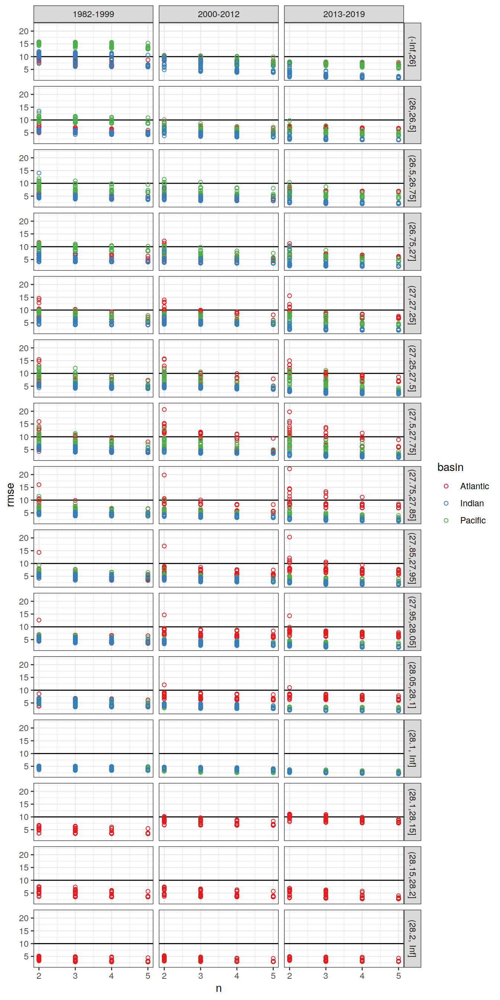
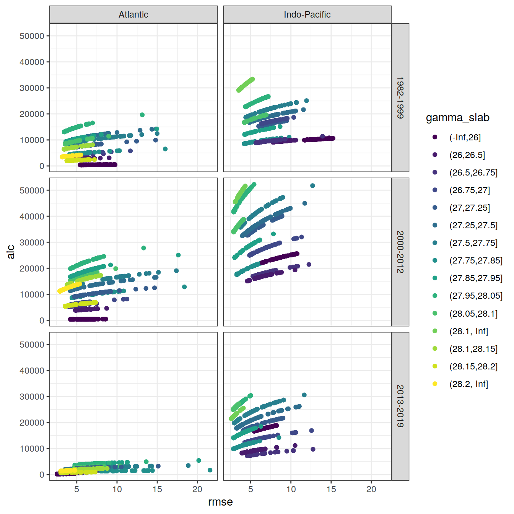
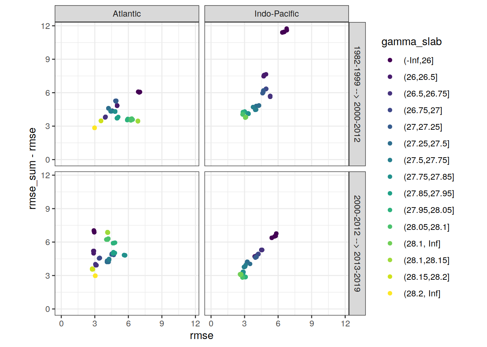

eMLR - model fitting
Jens Daniel Müller
30 November, 2020
Last updated: 2020-11-30
Checks: 7 0
Knit directory: emlr_obs_v_XXX/
This reproducible R Markdown analysis was created with workflowr (version 1.6.2). The Checks tab describes the reproducibility checks that were applied when the results were created. The Past versions tab lists the development history.
Great! Since the R Markdown file has been committed to the Git repository, you know the exact version of the code that produced these results.
Great job! The global environment was empty. Objects defined in the global environment can affect the analysis in your R Markdown file in unknown ways. For reproduciblity it’s best to always run the code in an empty environment.
The command set.seed(20200707) was run prior to running the code in the R Markdown file. Setting a seed ensures that any results that rely on randomness, e.g. subsampling or permutations, are reproducible.
Great job! Recording the operating system, R version, and package versions is critical for reproducibility.
Nice! There were no cached chunks for this analysis, so you can be confident that you successfully produced the results during this run.
Great job! Using relative paths to the files within your workflowr project makes it easier to run your code on other machines.
Great! You are using Git for version control. Tracking code development and connecting the code version to the results is critical for reproducibility.
The results in this page were generated with repository version 7a4b015. See the Past versions tab to see a history of the changes made to the R Markdown and HTML files.
Note that you need to be careful to ensure that all relevant files for the analysis have been committed to Git prior to generating the results (you can use wflow_publish or wflow_git_commit). workflowr only checks the R Markdown file, but you know if there are other scripts or data files that it depends on. Below is the status of the Git repository when the results were generated:
Ignored files:
Ignored: .Rhistory
Ignored: .Rproj.user/
Untracked files:
Untracked: data/
Unstaged changes:
Modified: .gitignore
Modified: analysis/_site.yml
Deleted: analysis/child/setup.Rmd
Deleted: analysis/config_parameterization.Rmd
Deleted: analysis/read_CO2_atm.Rmd
Deleted: analysis/read_GLODAPv2_2016_MappedClimatologies.Rmd
Deleted: analysis/read_GLODAPv2_2020.Rmd
Deleted: analysis/read_Gruber_2019_Cant.Rmd
Deleted: analysis/read_Sabine_2004_Cant.Rmd
Deleted: analysis/read_World_Ocean_Atlas_2018.Rmd
Modified: code/Workflowr_project_managment.R
Note that any generated files, e.g. HTML, png, CSS, etc., are not included in this status report because it is ok for generated content to have uncommitted changes.
These are the previous versions of the repository in which changes were made to the R Markdown (analysis/eMLR_model_fitting.Rmd) and HTML (docs/eMLR_model_fitting.html) files. If you’ve configured a remote Git repository (see ?wflow_git_remote), click on the hyperlinks in the table below to view the files as they were in that past version.
| File | Version | Author | Date | Message |
|---|---|---|---|---|
| Rmd | 7a4b015 | jens-daniel-mueller | 2020-11-30 | first rebuild on ETH server |
| Rmd | bc61ce3 | Jens Müller | 2020-11-30 | Initial commit |
path_functions <- "/nfs/kryo/work/updata/emlr_cant/utilities/functions/"
path_files <- "/nfs/kryo/work/updata/emlr_cant/utilities/files/"path_preprocessing <-
"/nfs/kryo/work/updata/emlr_cant/observations/preprocessing/"
path_version_data <-
paste(
"/nfs/kryo/work/updata/emlr_cant/observations/",
params_local$Version_ID,
"/data/",
sep = ""
)
path_version_figures <-
paste(
"/nfs/kryo/work/updata/emlr_cant/observations/",
params_local$Version_ID,
"/figures/",
sep = ""
)1 Libraries
Loading libraries specific to the the analysis performed in this section.
library(lubridate)
library(GGally)
library(olsrr)
library(knitr)
library(kableExtra)
library(broom)
library(corrr)
library(GGally)2 Required data
Required are:
- cleaned and prepared GLODAPv2_2020 file
GLODAP <-
read_csv(paste(path_version_data,
"GLODAPv2.2020_MLR_fitting_ready.csv",
sep = ""))3 Fitting all models
3.1 RMSE calculation
Individual linear regression models were fitted for C* as a function of each predictor combination. Fitting was performed separately within each basin, era, and slab. The root mean squared error (RMSE) was calculated for each fitted model.
# loops across all basins and eras
for (i_basin in unique(GLODAP$basin)) {
for (i_era in unique(GLODAP$era)) {
# i_basin <- unique(GLODAP$basin)[1]
# i_era <- unique(GLODAP$era)[1]
print(i_basin)
print(i_era )
# subset one basin and era for fitting
GLODAP_basin_era <- GLODAP %>%
filter(basin == i_basin, era == i_era)
# loop across all gamma slabs in the current basin and era
for (i_gamma_slab in unique(GLODAP_basin_era$gamma_slab)) {
# i_gamma_slab <- unique(GLODAP_basin_era$gamma_slab)[1]
print(i_gamma_slab)
# subset one gamma slab
GLODAP_basin_era_slab <- GLODAP_basin_era %>%
filter(gamma_slab == i_gamma_slab)
# fit the full linear model, i.e. all predictor combinations
lm_full <- lm(
params_local$MLR_full_model,
data = GLODAP_basin_era_slab)
# fit linear models for all possible predictor combinations
# unfortunately, this functions does not provide model coefficients (yet)
lm_all <- ols_step_all_possible(lm_full)
# extract diagnostics of each linear model
lm_all <- as_tibble(lm_all$result)
lm_all <- lm_all %>%
mutate(basin = i_basin,
era = i_era,
gamma_slab = i_gamma_slab)
# expanding table with model diagnostics for all eras, basins, slabs
if (exists("lm_all_stats")) {
lm_all_stats <- bind_rows(lm_all_stats, lm_all)
}
if (!exists("lm_all_stats")) {
lm_all_stats <- lm_all
}
rm(lm_full, lm_all)
}
}
}
# write model diagnostics to file
lm_all_stats %>% write_csv(paste(path_version_data,
"lm_all_stats.csv",
sep = ""))
rm(i_gamma_slab, i_era, i_basin,
GLODAP_basin_era, GLODAP_basin_era_slab)RMSE was plotted against the number of predictors (limited to 2 - 5).
# lm_all_stats <- read_csv(paste(path_version_data,
# "lm_all_stats.csv",
# sep = ""))
lm_all_stats <- lm_all_stats %>%
filter(n >= params_local$predictors_min,
n <= params_local$predictors_max)
lm_all_stats %>%
ggplot(aes(n, rmse, col = basin)) +
geom_hline(yintercept = 10) +
geom_point(shape = 21) +
facet_grid(gamma_slab~era) +
scale_color_brewer(palette = "Set1")
3.2 RMSE alternatives
AIC is an alternative criterion to RMSE to judge model quality, but not (yet) taken into account.
lm_all_stats %>%
ggplot(aes(rmse, aic, col = gamma_slab)) +
geom_point() +
scale_color_viridis_d() +
facet_grid(era~basin)
3.3 Predictor selection
Within each basin and slab, the 10 linear regression models with lowest summed RMSE across all eras were selected.
# select relevant columns
lm_all_stats <- lm_all_stats %>%
select(basin, era, gamma_slab, predictors, rmse)
# pivot table
lm_all_stats_wide <- lm_all_stats %>%
pivot_wider(names_from = era,
values_from = rmse,
names_prefix = "rmse_")
# calculate coefficient difference
# it would be good to recode this for a variable number of eras
# currently it is hard coded by era names
lm_all_stats_wide <- lm_all_stats_wide %>%
mutate(
rmse_sum_JGOFS_GO = rmse_JGOFS_WOCE + rmse_GO_SHIP,
rmse_sum_GO_new = rmse_GO_SHIP + rmse_new_era
)
# pivot back to long format
lm_all_stats <- lm_all_stats_wide %>%
pivot_longer(
c(rmse_sum_JGOFS_GO, rmse_sum_GO_new),
names_to = "eras",
values_to = "rmse_sum",
names_prefix = "rmse_sum_"
)
# subset models with lowest RMSE
lm_best <- lm_all_stats %>%
group_by(basin, gamma_slab, eras) %>%
slice_min(order_by = rmse_sum,
with_ties = FALSE,
n = params_local$MLR_number) %>%
ungroup() %>%
arrange(basin, gamma_slab, eras, predictors)
# plot table for website
kable(lm_best) %>%
add_header_above() %>%
kable_styling() %>%
scroll_box(width = "100%", height = "400px")| basin | gamma_slab | predictors | rmse_GO_SHIP | rmse_JGOFS_WOCE | rmse_new_era | eras | rmse_sum |
|---|---|---|---|---|---|---|---|
| Atlantic | (-Inf,26] | sal aou oxygen silicate phosphate | 6.443592 | 6.690887 | 2.723262 | GO_new | 9.166854 |
| Atlantic | (-Inf,26] | sal aou oxygen silicate phosphate_star | 6.443592 | 6.690887 | 2.723262 | GO_new | 9.166854 |
| Atlantic | (-Inf,26] | sal aou silicate phosphate phosphate_star | 6.443592 | 6.690887 | 2.723262 | GO_new | 9.166854 |
| Atlantic | (-Inf,26] | sal tem aou oxygen phosphate | 6.570724 | 6.262613 | 2.593086 | GO_new | 9.163810 |
| Atlantic | (-Inf,26] | sal tem aou oxygen phosphate_star | 6.570724 | 6.262613 | 2.593086 | GO_new | 9.163810 |
| Atlantic | (-Inf,26] | sal tem aou phosphate phosphate_star | 6.570724 | 6.262613 | 2.593086 | GO_new | 9.163810 |
| Atlantic | (-Inf,26] | sal tem aou silicate phosphate | 6.507397 | 6.607697 | 2.685329 | GO_new | 9.192726 |
| Atlantic | (-Inf,26] | sal tem aou silicate phosphate_star | 6.514931 | 6.589463 | 2.680247 | GO_new | 9.195177 |
| Atlantic | (-Inf,26] | sal tem oxygen silicate phosphate | 6.520974 | 6.563492 | 2.679213 | GO_new | 9.200188 |
| Atlantic | (-Inf,26] | sal tem oxygen silicate phosphate_star | 6.520974 | 6.563492 | 2.679213 | GO_new | 9.200188 |
| Atlantic | (-Inf,26] | sal aou oxygen silicate phosphate | 6.443592 | 6.690887 | 2.723262 | JGOFS_GO | 13.134479 |
| Atlantic | (-Inf,26] | sal aou oxygen silicate phosphate_star | 6.443592 | 6.690887 | 2.723262 | JGOFS_GO | 13.134479 |
| Atlantic | (-Inf,26] | sal tem aou oxygen phosphate | 6.570724 | 6.262613 | 2.593086 | JGOFS_GO | 12.833337 |
| Atlantic | (-Inf,26] | sal tem aou oxygen phosphate_star | 6.570724 | 6.262613 | 2.593086 | JGOFS_GO | 12.833337 |
| Atlantic | (-Inf,26] | sal tem aou phosphate phosphate_star | 6.570724 | 6.262613 | 2.593086 | JGOFS_GO | 12.833337 |
| Atlantic | (-Inf,26] | sal tem aou silicate phosphate | 6.507397 | 6.607697 | 2.685329 | JGOFS_GO | 13.115094 |
| Atlantic | (-Inf,26] | sal tem aou silicate phosphate_star | 6.514931 | 6.589463 | 2.680247 | JGOFS_GO | 13.104394 |
| Atlantic | (-Inf,26] | sal tem oxygen silicate phosphate | 6.520974 | 6.563492 | 2.679213 | JGOFS_GO | 13.084466 |
| Atlantic | (-Inf,26] | sal tem oxygen silicate phosphate_star | 6.520974 | 6.563492 | 2.679213 | JGOFS_GO | 13.084466 |
| Atlantic | (-Inf,26] | sal tem silicate phosphate phosphate_star | 6.520974 | 6.563492 | 2.679213 | JGOFS_GO | 13.084466 |
| Atlantic | (26,26.5] | sal tem aou oxygen phosphate | 5.119954 | 4.879713 | 2.725092 | GO_new | 7.845046 |
| Atlantic | (26,26.5] | sal tem aou oxygen phosphate_star | 5.119954 | 4.879713 | 2.725092 | GO_new | 7.845046 |
| Atlantic | (26,26.5] | sal tem aou phosphate phosphate_star | 5.119954 | 4.879713 | 2.725092 | GO_new | 7.845046 |
| Atlantic | (26,26.5] | tem aou oxygen phosphate | 5.125667 | 4.884808 | 2.805619 | GO_new | 7.931286 |
| Atlantic | (26,26.5] | tem aou oxygen phosphate phosphate_star | 5.125667 | 4.884808 | 2.805619 | GO_new | 7.931286 |
| Atlantic | (26,26.5] | tem aou oxygen phosphate_star | 5.125667 | 4.884808 | 2.805619 | GO_new | 7.931286 |
| Atlantic | (26,26.5] | tem aou oxygen silicate phosphate | 5.114177 | 4.843389 | 2.799017 | GO_new | 7.913194 |
| Atlantic | (26,26.5] | tem aou oxygen silicate phosphate_star | 5.114177 | 4.843389 | 2.799017 | GO_new | 7.913194 |
| Atlantic | (26,26.5] | tem aou phosphate phosphate_star | 5.125667 | 4.884808 | 2.805619 | GO_new | 7.931286 |
| Atlantic | (26,26.5] | tem aou silicate phosphate phosphate_star | 5.114177 | 4.843389 | 2.799017 | GO_new | 7.913194 |
| Atlantic | (26,26.5] | sal tem aou oxygen phosphate | 5.119954 | 4.879713 | 2.725092 | JGOFS_GO | 9.999667 |
| Atlantic | (26,26.5] | sal tem aou oxygen phosphate_star | 5.119954 | 4.879713 | 2.725092 | JGOFS_GO | 9.999667 |
| Atlantic | (26,26.5] | sal tem aou phosphate phosphate_star | 5.119954 | 4.879713 | 2.725092 | JGOFS_GO | 9.999667 |
| Atlantic | (26,26.5] | tem aou oxygen phosphate | 5.125667 | 4.884808 | 2.805619 | JGOFS_GO | 10.010475 |
| Atlantic | (26,26.5] | tem aou oxygen phosphate phosphate_star | 5.125667 | 4.884808 | 2.805619 | JGOFS_GO | 10.010475 |
| Atlantic | (26,26.5] | tem aou oxygen phosphate_star | 5.125667 | 4.884808 | 2.805619 | JGOFS_GO | 10.010475 |
| Atlantic | (26,26.5] | tem aou oxygen silicate phosphate | 5.114177 | 4.843389 | 2.799017 | JGOFS_GO | 9.957565 |
| Atlantic | (26,26.5] | tem aou oxygen silicate phosphate_star | 5.114177 | 4.843389 | 2.799017 | JGOFS_GO | 9.957565 |
| Atlantic | (26,26.5] | tem aou phosphate phosphate_star | 5.125667 | 4.884808 | 2.805619 | JGOFS_GO | 10.010475 |
| Atlantic | (26,26.5] | tem aou silicate phosphate phosphate_star | 5.114177 | 4.843389 | 2.799017 | JGOFS_GO | 9.957565 |
| Atlantic | (26.5,26.75] | sal tem aou oxygen phosphate | 4.236994 | 3.838780 | 3.119611 | GO_new | 7.356605 |
| Atlantic | (26.5,26.75] | sal tem aou oxygen phosphate_star | 4.236994 | 3.838780 | 3.119611 | GO_new | 7.356605 |
| Atlantic | (26.5,26.75] | sal tem aou phosphate phosphate_star | 4.236994 | 3.838780 | 3.119611 | GO_new | 7.356605 |
| Atlantic | (26.5,26.75] | sal tem aou silicate phosphate_star | 4.194604 | 3.966208 | 3.163883 | GO_new | 7.358487 |
| Atlantic | (26.5,26.75] | sal tem oxygen silicate phosphate | 4.190769 | 3.955370 | 3.163997 | GO_new | 7.354767 |
| Atlantic | (26.5,26.75] | sal tem oxygen silicate phosphate_star | 4.190769 | 3.955370 | 3.163997 | GO_new | 7.354767 |
| Atlantic | (26.5,26.75] | sal tem silicate phosphate phosphate_star | 4.190769 | 3.955370 | 3.163997 | GO_new | 7.354767 |
| Atlantic | (26.5,26.75] | tem aou oxygen silicate phosphate | 4.224299 | 3.865710 | 3.114482 | GO_new | 7.338782 |
| Atlantic | (26.5,26.75] | tem aou oxygen silicate phosphate_star | 4.224299 | 3.865710 | 3.114482 | GO_new | 7.338782 |
| Atlantic | (26.5,26.75] | tem aou silicate phosphate phosphate_star | 4.224299 | 3.865710 | 3.114482 | GO_new | 7.338782 |
| Atlantic | (26.5,26.75] | sal tem aou oxygen phosphate | 4.236994 | 3.838780 | 3.119611 | JGOFS_GO | 8.075774 |
| Atlantic | (26.5,26.75] | sal tem aou oxygen phosphate_star | 4.236994 | 3.838780 | 3.119611 | JGOFS_GO | 8.075774 |
| Atlantic | (26.5,26.75] | sal tem aou phosphate phosphate_star | 4.236994 | 3.838780 | 3.119611 | JGOFS_GO | 8.075774 |
| Atlantic | (26.5,26.75] | sal tem aou silicate phosphate_star | 4.194604 | 3.966208 | 3.163883 | JGOFS_GO | 8.160811 |
| Atlantic | (26.5,26.75] | sal tem oxygen silicate phosphate | 4.190769 | 3.955370 | 3.163997 | JGOFS_GO | 8.146139 |
| Atlantic | (26.5,26.75] | sal tem oxygen silicate phosphate_star | 4.190769 | 3.955370 | 3.163997 | JGOFS_GO | 8.146139 |
| Atlantic | (26.5,26.75] | sal tem silicate phosphate phosphate_star | 4.190769 | 3.955370 | 3.163997 | JGOFS_GO | 8.146139 |
| Atlantic | (26.5,26.75] | tem aou oxygen silicate phosphate | 4.224299 | 3.865710 | 3.114482 | JGOFS_GO | 8.090010 |
| Atlantic | (26.5,26.75] | tem aou oxygen silicate phosphate_star | 4.224299 | 3.865710 | 3.114482 | JGOFS_GO | 8.090010 |
| Atlantic | (26.5,26.75] | tem aou silicate phosphate phosphate_star | 4.224299 | 3.865710 | 3.114482 | JGOFS_GO | 8.090010 |
| Atlantic | (26.75,27] | sal tem aou silicate phosphate | 4.356890 | 4.437273 | 3.681709 | GO_new | 8.038600 |
| Atlantic | (26.75,27] | sal tem aou silicate phosphate_star | 4.334386 | 4.415839 | 3.684673 | GO_new | 8.019058 |
| Atlantic | (26.75,27] | sal tem oxygen silicate phosphate | 4.334399 | 4.414898 | 3.685259 | GO_new | 8.019658 |
| Atlantic | (26.75,27] | sal tem oxygen silicate phosphate_star | 4.334399 | 4.414898 | 3.685259 | GO_new | 8.019658 |
| Atlantic | (26.75,27] | sal tem silicate phosphate phosphate_star | 4.334399 | 4.414898 | 3.685259 | GO_new | 8.019658 |
| Atlantic | (26.75,27] | tem aou oxygen silicate phosphate | 4.367859 | 4.472974 | 3.699599 | GO_new | 8.067458 |
| Atlantic | (26.75,27] | tem aou oxygen silicate phosphate_star | 4.367859 | 4.472974 | 3.699599 | GO_new | 8.067458 |
| Atlantic | (26.75,27] | tem aou silicate phosphate phosphate_star | 4.367859 | 4.472974 | 3.699599 | GO_new | 8.067458 |
| Atlantic | (26.75,27] | tem aou silicate phosphate_star | 4.370058 | 4.474638 | 3.702781 | GO_new | 8.072838 |
| Atlantic | (26.75,27] | tem oxygen silicate phosphate | 4.370117 | 4.474040 | 3.703325 | GO_new | 8.073442 |
| Atlantic | (26.75,27] | sal tem aou oxygen phosphate | 4.360002 | 4.429072 | 3.792996 | JGOFS_GO | 8.789075 |
| Atlantic | (26.75,27] | sal tem aou oxygen phosphate_star | 4.360002 | 4.429072 | 3.792996 | JGOFS_GO | 8.789075 |
| Atlantic | (26.75,27] | sal tem aou phosphate phosphate_star | 4.360002 | 4.429072 | 3.792996 | JGOFS_GO | 8.789075 |
| Atlantic | (26.75,27] | sal tem aou silicate phosphate | 4.356890 | 4.437273 | 3.681709 | JGOFS_GO | 8.794164 |
| Atlantic | (26.75,27] | sal tem aou silicate phosphate_star | 4.334386 | 4.415839 | 3.684673 | JGOFS_GO | 8.750225 |
| Atlantic | (26.75,27] | sal tem oxygen phosphate_star | 4.367237 | 4.430224 | 3.797318 | JGOFS_GO | 8.797460 |
| Atlantic | (26.75,27] | sal tem oxygen silicate phosphate | 4.334399 | 4.414898 | 3.685259 | JGOFS_GO | 8.749298 |
| Atlantic | (26.75,27] | sal tem oxygen silicate phosphate_star | 4.334399 | 4.414898 | 3.685259 | JGOFS_GO | 8.749298 |
| Atlantic | (26.75,27] | sal tem phosphate phosphate_star | 4.367237 | 4.430224 | 3.797318 | JGOFS_GO | 8.797460 |
| Atlantic | (26.75,27] | sal tem silicate phosphate phosphate_star | 4.334399 | 4.414898 | 3.685259 | JGOFS_GO | 8.749298 |
| Atlantic | (27,27.25] | sal aou oxygen silicate phosphate | 4.968892 | 5.285521 | 4.739592 | GO_new | 9.708484 |
| Atlantic | (27,27.25] | sal aou oxygen silicate phosphate_star | 4.968892 | 5.285521 | 4.739592 | GO_new | 9.708484 |
| Atlantic | (27,27.25] | sal tem aou silicate phosphate | 4.788056 | 5.136310 | 4.763216 | GO_new | 9.551272 |
| Atlantic | (27,27.25] | sal tem aou silicate phosphate_star | 4.715622 | 5.109386 | 4.785133 | GO_new | 9.500756 |
| Atlantic | (27,27.25] | sal tem oxygen silicate phosphate | 4.721445 | 5.108732 | 4.785806 | GO_new | 9.507251 |
| Atlantic | (27,27.25] | sal tem oxygen silicate phosphate_star | 4.721445 | 5.108732 | 4.785806 | GO_new | 9.507251 |
| Atlantic | (27,27.25] | sal tem silicate phosphate phosphate_star | 4.721445 | 5.108732 | 4.785806 | GO_new | 9.507251 |
| Atlantic | (27,27.25] | tem aou oxygen silicate phosphate | 4.707474 | 5.158136 | 4.873179 | GO_new | 9.580653 |
| Atlantic | (27,27.25] | tem aou oxygen silicate phosphate_star | 4.707474 | 5.158136 | 4.873179 | GO_new | 9.580653 |
| Atlantic | (27,27.25] | tem aou silicate phosphate phosphate_star | 4.707474 | 5.158136 | 4.873179 | GO_new | 9.580653 |
| Atlantic | (27,27.25] | sal tem aou silicate phosphate_star | 4.715622 | 5.109386 | 4.785133 | JGOFS_GO | 9.825008 |
| Atlantic | (27,27.25] | sal tem oxygen silicate phosphate | 4.721445 | 5.108732 | 4.785806 | JGOFS_GO | 9.830177 |
| Atlantic | (27,27.25] | sal tem oxygen silicate phosphate_star | 4.721445 | 5.108732 | 4.785806 | JGOFS_GO | 9.830177 |
| Atlantic | (27,27.25] | sal tem silicate phosphate phosphate_star | 4.721445 | 5.108732 | 4.785806 | JGOFS_GO | 9.830177 |
| Atlantic | (27,27.25] | tem aou oxygen silicate phosphate | 4.707474 | 5.158136 | 4.873179 | JGOFS_GO | 9.865609 |
| Atlantic | (27,27.25] | tem aou oxygen silicate phosphate_star | 4.707474 | 5.158136 | 4.873179 | JGOFS_GO | 9.865609 |
| Atlantic | (27,27.25] | tem aou silicate phosphate phosphate_star | 4.707474 | 5.158136 | 4.873179 | JGOFS_GO | 9.865609 |
| Atlantic | (27,27.25] | tem aou silicate phosphate_star | 4.749838 | 5.159735 | 4.997648 | JGOFS_GO | 9.909573 |
| Atlantic | (27,27.25] | tem oxygen silicate phosphate_star | 4.755685 | 5.159542 | 4.997198 | JGOFS_GO | 9.915227 |
| Atlantic | (27,27.25] | tem silicate phosphate phosphate_star | 4.755685 | 5.159542 | 4.997198 | JGOFS_GO | 9.915227 |
| Atlantic | (27.25,27.5] | sal aou oxygen silicate phosphate | 4.272246 | 4.532203 | 3.863654 | GO_new | 8.135900 |
| Atlantic | (27.25,27.5] | sal aou oxygen silicate phosphate_star | 4.272246 | 4.532203 | 3.863654 | GO_new | 8.135900 |
| Atlantic | (27.25,27.5] | sal aou silicate phosphate phosphate_star | 4.272246 | 4.532203 | 3.863654 | GO_new | 8.135900 |
| Atlantic | (27.25,27.5] | sal tem aou silicate phosphate | 4.208929 | 4.510777 | 3.905331 | GO_new | 8.114260 |
| Atlantic | (27.25,27.5] | sal tem oxygen silicate phosphate | 4.190035 | 4.509306 | 3.940069 | GO_new | 8.130105 |
| Atlantic | (27.25,27.5] | sal tem oxygen silicate phosphate_star | 4.190035 | 4.509306 | 3.940069 | GO_new | 8.130105 |
| Atlantic | (27.25,27.5] | sal tem silicate phosphate phosphate_star | 4.190035 | 4.509306 | 3.940069 | GO_new | 8.130105 |
| Atlantic | (27.25,27.5] | tem aou oxygen silicate phosphate | 4.278962 | 4.558877 | 3.847627 | GO_new | 8.126589 |
| Atlantic | (27.25,27.5] | tem aou oxygen silicate phosphate_star | 4.278962 | 4.558877 | 3.847627 | GO_new | 8.126589 |
| Atlantic | (27.25,27.5] | tem aou silicate phosphate phosphate_star | 4.278962 | 4.558877 | 3.847627 | GO_new | 8.126589 |
| Atlantic | (27.25,27.5] | sal tem aou oxygen phosphate | 4.187124 | 4.509827 | 3.985409 | JGOFS_GO | 8.696952 |
| Atlantic | (27.25,27.5] | sal tem aou oxygen phosphate_star | 4.187124 | 4.509827 | 3.985409 | JGOFS_GO | 8.696952 |
| Atlantic | (27.25,27.5] | sal tem aou phosphate phosphate_star | 4.187124 | 4.509827 | 3.985409 | JGOFS_GO | 8.696952 |
| Atlantic | (27.25,27.5] | sal tem aou phosphate_star | 4.187329 | 4.513282 | 4.075869 | JGOFS_GO | 8.700611 |
| Atlantic | (27.25,27.5] | sal tem aou silicate phosphate_star | 4.186556 | 4.510618 | 3.951001 | JGOFS_GO | 8.697174 |
| Atlantic | (27.25,27.5] | sal tem oxygen phosphate | 4.190387 | 4.511502 | 4.064790 | JGOFS_GO | 8.701889 |
| Atlantic | (27.25,27.5] | sal tem oxygen phosphate_star | 4.190387 | 4.511502 | 4.064790 | JGOFS_GO | 8.701889 |
| Atlantic | (27.25,27.5] | sal tem oxygen silicate phosphate | 4.190035 | 4.509306 | 3.940069 | JGOFS_GO | 8.699342 |
| Atlantic | (27.25,27.5] | sal tem oxygen silicate phosphate_star | 4.190035 | 4.509306 | 3.940069 | JGOFS_GO | 8.699342 |
| Atlantic | (27.25,27.5] | sal tem silicate phosphate phosphate_star | 4.190035 | 4.509306 | 3.940069 | JGOFS_GO | 8.699342 |
| Atlantic | (27.5,27.75] | sal aou oxygen silicate phosphate | 4.356329 | 4.416547 | 4.458187 | GO_new | 8.814516 |
| Atlantic | (27.5,27.75] | sal aou silicate phosphate phosphate_star | 4.356329 | 4.416547 | 4.458187 | GO_new | 8.814516 |
| Atlantic | (27.5,27.75] | sal tem aou silicate phosphate | 4.345371 | 4.417100 | 4.446332 | GO_new | 8.791704 |
| Atlantic | (27.5,27.75] | sal tem aou silicate phosphate_star | 4.359172 | 4.433508 | 4.416434 | GO_new | 8.775606 |
| Atlantic | (27.5,27.75] | sal tem oxygen silicate phosphate | 4.346890 | 4.424845 | 4.431690 | GO_new | 8.778580 |
| Atlantic | (27.5,27.75] | sal tem oxygen silicate phosphate_star | 4.346890 | 4.424845 | 4.431690 | GO_new | 8.778580 |
| Atlantic | (27.5,27.75] | sal tem silicate phosphate phosphate_star | 4.346890 | 4.424845 | 4.431690 | GO_new | 8.778580 |
| Atlantic | (27.5,27.75] | tem aou oxygen silicate phosphate | 4.387136 | 4.441152 | 4.408584 | GO_new | 8.795720 |
| Atlantic | (27.5,27.75] | tem aou oxygen silicate phosphate_star | 4.387136 | 4.441152 | 4.408584 | GO_new | 8.795720 |
| Atlantic | (27.5,27.75] | tem aou silicate phosphate phosphate_star | 4.387136 | 4.441152 | 4.408584 | GO_new | 8.795720 |
| Atlantic | (27.5,27.75] | sal aou oxygen silicate phosphate | 4.356329 | 4.416547 | 4.458187 | JGOFS_GO | 8.772877 |
| Atlantic | (27.5,27.75] | sal aou oxygen silicate phosphate_star | 4.356329 | 4.416547 | 4.458187 | JGOFS_GO | 8.772877 |
| Atlantic | (27.5,27.75] | sal aou silicate phosphate phosphate_star | 4.356329 | 4.416547 | 4.458187 | JGOFS_GO | 8.772877 |
| Atlantic | (27.5,27.75] | sal tem aou silicate phosphate | 4.345371 | 4.417100 | 4.446332 | JGOFS_GO | 8.762471 |
| Atlantic | (27.5,27.75] | sal tem aou silicate phosphate_star | 4.359172 | 4.433508 | 4.416434 | JGOFS_GO | 8.792680 |
| Atlantic | (27.5,27.75] | sal tem oxygen silicate phosphate | 4.346890 | 4.424845 | 4.431690 | JGOFS_GO | 8.771735 |
| Atlantic | (27.5,27.75] | sal tem oxygen silicate phosphate_star | 4.346890 | 4.424845 | 4.431690 | JGOFS_GO | 8.771735 |
| Atlantic | (27.5,27.75] | sal tem silicate phosphate phosphate_star | 4.346890 | 4.424845 | 4.431690 | JGOFS_GO | 8.771735 |
| Atlantic | (27.5,27.75] | tem aou oxygen silicate phosphate | 4.387136 | 4.441152 | 4.408584 | JGOFS_GO | 8.828288 |
| Atlantic | (27.5,27.75] | tem aou silicate phosphate phosphate_star | 4.387136 | 4.441152 | 4.408584 | JGOFS_GO | 8.828288 |
| Atlantic | (27.75,27.85] | sal aou oxygen silicate phosphate | 4.698470 | 4.595052 | 6.733110 | GO_new | 11.431580 |
| Atlantic | (27.75,27.85] | sal aou oxygen silicate phosphate_star | 4.698470 | 4.595052 | 6.733110 | GO_new | 11.431580 |
| Atlantic | (27.75,27.85] | sal aou silicate phosphate phosphate_star | 4.698470 | 4.595052 | 6.733110 | GO_new | 11.431580 |
| Atlantic | (27.75,27.85] | sal tem aou silicate phosphate | 4.698226 | 4.594896 | 6.764984 | GO_new | 11.463209 |
| Atlantic | (27.75,27.85] | sal tem aou silicate phosphate_star | 4.704552 | 4.597494 | 6.730363 | GO_new | 11.434915 |
| Atlantic | (27.75,27.85] | sal tem oxygen silicate phosphate | 4.699260 | 4.595098 | 6.764729 | GO_new | 11.463989 |
| Atlantic | (27.75,27.85] | sal tem oxygen silicate phosphate_star | 4.699260 | 4.595098 | 6.764729 | GO_new | 11.463989 |
| Atlantic | (27.75,27.85] | tem aou oxygen silicate phosphate | 4.724860 | 4.630976 | 6.653574 | GO_new | 11.378434 |
| Atlantic | (27.75,27.85] | tem aou oxygen silicate phosphate_star | 4.724860 | 4.630976 | 6.653574 | GO_new | 11.378434 |
| Atlantic | (27.75,27.85] | tem aou silicate phosphate phosphate_star | 4.724860 | 4.630976 | 6.653574 | GO_new | 11.378434 |
| Atlantic | (27.75,27.85] | sal aou oxygen silicate phosphate | 4.698470 | 4.595052 | 6.733110 | JGOFS_GO | 9.293523 |
| Atlantic | (27.75,27.85] | sal aou oxygen silicate phosphate_star | 4.698470 | 4.595052 | 6.733110 | JGOFS_GO | 9.293523 |
| Atlantic | (27.75,27.85] | sal aou silicate phosphate phosphate_star | 4.698470 | 4.595052 | 6.733110 | JGOFS_GO | 9.293523 |
| Atlantic | (27.75,27.85] | sal oxygen silicate phosphate | 4.703764 | 4.595129 | 6.786839 | JGOFS_GO | 9.298893 |
| Atlantic | (27.75,27.85] | sal oxygen silicate phosphate_star | 4.703764 | 4.595129 | 6.786839 | JGOFS_GO | 9.298893 |
| Atlantic | (27.75,27.85] | sal silicate phosphate phosphate_star | 4.703764 | 4.595129 | 6.786839 | JGOFS_GO | 9.298893 |
| Atlantic | (27.75,27.85] | sal tem aou silicate phosphate | 4.698226 | 4.594896 | 6.764984 | JGOFS_GO | 9.293121 |
| Atlantic | (27.75,27.85] | sal tem oxygen silicate phosphate | 4.699260 | 4.595098 | 6.764729 | JGOFS_GO | 9.294357 |
| Atlantic | (27.75,27.85] | sal tem oxygen silicate phosphate_star | 4.699260 | 4.595098 | 6.764729 | JGOFS_GO | 9.294357 |
| Atlantic | (27.75,27.85] | sal tem silicate phosphate phosphate_star | 4.699260 | 4.595098 | 6.764729 | JGOFS_GO | 9.294357 |
| Atlantic | (27.85,27.95] | sal aou oxygen silicate phosphate | 4.891497 | 3.942064 | 4.896287 | GO_new | 9.787783 |
| Atlantic | (27.85,27.95] | sal aou oxygen silicate phosphate_star | 4.891497 | 3.942064 | 4.896287 | GO_new | 9.787783 |
| Atlantic | (27.85,27.95] | sal aou silicate phosphate phosphate_star | 4.891497 | 3.942064 | 4.896287 | GO_new | 9.787783 |
| Atlantic | (27.85,27.95] | sal aou silicate phosphate_star | 4.944030 | 4.017605 | 5.022147 | GO_new | 9.966177 |
| Atlantic | (27.85,27.95] | sal tem aou silicate phosphate | 4.893816 | 3.949801 | 4.931832 | GO_new | 9.825648 |
| Atlantic | (27.85,27.95] | sal tem aou silicate phosphate_star | 4.890741 | 3.944027 | 4.911670 | GO_new | 9.802411 |
| Atlantic | (27.85,27.95] | sal tem oxygen silicate phosphate | 4.892756 | 3.949398 | 4.933393 | GO_new | 9.826149 |
| Atlantic | (27.85,27.95] | sal tem oxygen silicate phosphate_star | 4.892756 | 3.949398 | 4.933393 | GO_new | 9.826149 |
| Atlantic | (27.85,27.95] | sal tem silicate phosphate | 4.987923 | 3.952715 | 4.941563 | GO_new | 9.929486 |
| Atlantic | (27.85,27.95] | sal tem silicate phosphate phosphate_star | 4.892756 | 3.949398 | 4.933393 | GO_new | 9.826149 |
| Atlantic | (27.85,27.95] | sal aou oxygen silicate phosphate | 4.891497 | 3.942064 | 4.896287 | JGOFS_GO | 8.833560 |
| Atlantic | (27.85,27.95] | sal aou oxygen silicate phosphate_star | 4.891497 | 3.942064 | 4.896287 | JGOFS_GO | 8.833560 |
| Atlantic | (27.85,27.95] | sal aou silicate phosphate phosphate_star | 4.891497 | 3.942064 | 4.896287 | JGOFS_GO | 8.833560 |
| Atlantic | (27.85,27.95] | sal aou silicate phosphate_star | 4.944030 | 4.017605 | 5.022147 | JGOFS_GO | 8.961635 |
| Atlantic | (27.85,27.95] | sal tem aou silicate phosphate | 4.893816 | 3.949801 | 4.931832 | JGOFS_GO | 8.843617 |
| Atlantic | (27.85,27.95] | sal tem aou silicate phosphate_star | 4.890741 | 3.944027 | 4.911670 | JGOFS_GO | 8.834768 |
| Atlantic | (27.85,27.95] | sal tem oxygen silicate phosphate | 4.892756 | 3.949398 | 4.933393 | JGOFS_GO | 8.842154 |
| Atlantic | (27.85,27.95] | sal tem oxygen silicate phosphate_star | 4.892756 | 3.949398 | 4.933393 | JGOFS_GO | 8.842154 |
| Atlantic | (27.85,27.95] | sal tem silicate phosphate | 4.987923 | 3.952715 | 4.941563 | JGOFS_GO | 8.940638 |
| Atlantic | (27.85,27.95] | sal tem silicate phosphate phosphate_star | 4.892756 | 3.949398 | 4.933393 | JGOFS_GO | 8.842154 |
| Atlantic | (27.95,28.05] | sal aou oxygen silicate phosphate | 5.739076 | 3.718335 | 5.080115 | GO_new | 10.819190 |
| Atlantic | (27.95,28.05] | sal aou oxygen silicate phosphate_star | 5.739076 | 3.718335 | 5.080115 | GO_new | 10.819190 |
| Atlantic | (27.95,28.05] | sal aou silicate phosphate phosphate_star | 5.739076 | 3.718335 | 5.080115 | GO_new | 10.819190 |
| Atlantic | (27.95,28.05] | sal aou silicate phosphate_star | 5.741383 | 3.722383 | 5.097551 | GO_new | 10.838935 |
| Atlantic | (27.95,28.05] | sal tem aou oxygen phosphate | 5.849683 | 4.062895 | 4.910700 | GO_new | 10.760383 |
| Atlantic | (27.95,28.05] | sal tem aou oxygen phosphate_star | 5.849683 | 4.062895 | 4.910700 | GO_new | 10.760383 |
| Atlantic | (27.95,28.05] | sal tem aou phosphate phosphate_star | 5.849683 | 4.062895 | 4.910700 | GO_new | 10.760383 |
| Atlantic | (27.95,28.05] | sal tem aou silicate phosphate_star | 5.741118 | 3.720558 | 5.096524 | GO_new | 10.837642 |
| Atlantic | (27.95,28.05] | sal tem oxygen silicate phosphate_star | 5.757884 | 3.735580 | 5.153075 | GO_new | 10.910958 |
| Atlantic | (27.95,28.05] | sal tem silicate phosphate phosphate_star | 5.757884 | 3.735580 | 5.153075 | GO_new | 10.910958 |
| Atlantic | (27.95,28.05] | sal aou oxygen silicate phosphate | 5.739076 | 3.718335 | 5.080115 | JGOFS_GO | 9.457411 |
| Atlantic | (27.95,28.05] | sal aou oxygen silicate phosphate_star | 5.739076 | 3.718335 | 5.080115 | JGOFS_GO | 9.457411 |
| Atlantic | (27.95,28.05] | sal aou silicate phosphate phosphate_star | 5.739076 | 3.718335 | 5.080115 | JGOFS_GO | 9.457411 |
| Atlantic | (27.95,28.05] | sal aou silicate phosphate_star | 5.741383 | 3.722383 | 5.097551 | JGOFS_GO | 9.463766 |
| Atlantic | (27.95,28.05] | sal oxygen silicate phosphate_star | 5.802526 | 3.820603 | 5.205036 | JGOFS_GO | 9.623129 |
| Atlantic | (27.95,28.05] | sal tem aou silicate phosphate | 5.770819 | 3.744744 | 5.174879 | JGOFS_GO | 9.515563 |
| Atlantic | (27.95,28.05] | sal tem aou silicate phosphate_star | 5.741118 | 3.720558 | 5.096524 | JGOFS_GO | 9.461676 |
| Atlantic | (27.95,28.05] | sal tem oxygen silicate phosphate | 5.757884 | 3.735580 | 5.153075 | JGOFS_GO | 9.493463 |
| Atlantic | (27.95,28.05] | sal tem oxygen silicate phosphate_star | 5.757884 | 3.735580 | 5.153075 | JGOFS_GO | 9.493463 |
| Atlantic | (27.95,28.05] | sal tem silicate phosphate phosphate_star | 5.757884 | 3.735580 | 5.153075 | JGOFS_GO | 9.493463 |
| Atlantic | (28.05,28.1] | sal tem aou oxygen phosphate | 5.932727 | 3.594746 | 4.579861 | GO_new | 10.512589 |
| Atlantic | (28.05,28.1] | sal tem aou oxygen phosphate_star | 5.932727 | 3.594746 | 4.579861 | GO_new | 10.512589 |
| Atlantic | (28.05,28.1] | sal tem aou phosphate phosphate_star | 5.932727 | 3.594746 | 4.579861 | GO_new | 10.512589 |
| Atlantic | (28.05,28.1] | tem aou oxygen phosphate | 6.026656 | 3.736781 | 4.580902 | GO_new | 10.607558 |
| Atlantic | (28.05,28.1] | tem aou oxygen phosphate phosphate_star | 6.026656 | 3.736781 | 4.580902 | GO_new | 10.607558 |
| Atlantic | (28.05,28.1] | tem aou oxygen phosphate_star | 6.026656 | 3.736781 | 4.580902 | GO_new | 10.607558 |
| Atlantic | (28.05,28.1] | tem aou oxygen silicate phosphate | 5.936735 | 3.680960 | 4.520107 | GO_new | 10.456843 |
| Atlantic | (28.05,28.1] | tem aou oxygen silicate phosphate_star | 5.936735 | 3.680960 | 4.520107 | GO_new | 10.456843 |
| Atlantic | (28.05,28.1] | tem aou phosphate phosphate_star | 6.026656 | 3.736781 | 4.580902 | GO_new | 10.607558 |
| Atlantic | (28.05,28.1] | tem aou silicate phosphate phosphate_star | 5.936735 | 3.680960 | 4.520107 | GO_new | 10.456843 |
| Atlantic | (28.05,28.1] | sal tem aou oxygen phosphate | 5.932727 | 3.594746 | 4.579861 | JGOFS_GO | 9.527473 |
| Atlantic | (28.05,28.1] | sal tem aou oxygen phosphate_star | 5.932727 | 3.594746 | 4.579861 | JGOFS_GO | 9.527473 |
| Atlantic | (28.05,28.1] | sal tem aou phosphate phosphate_star | 5.932727 | 3.594746 | 4.579861 | JGOFS_GO | 9.527473 |
| Atlantic | (28.05,28.1] | sal tem aou silicate phosphate_star | 6.097688 | 3.650365 | 5.100949 | JGOFS_GO | 9.748053 |
| Atlantic | (28.05,28.1] | tem aou oxygen phosphate | 6.026656 | 3.736781 | 4.580902 | JGOFS_GO | 9.763437 |
| Atlantic | (28.05,28.1] | tem aou oxygen phosphate phosphate_star | 6.026656 | 3.736781 | 4.580902 | JGOFS_GO | 9.763437 |
| Atlantic | (28.05,28.1] | tem aou oxygen phosphate_star | 6.026656 | 3.736781 | 4.580902 | JGOFS_GO | 9.763437 |
| Atlantic | (28.05,28.1] | tem aou oxygen silicate phosphate | 5.936735 | 3.680960 | 4.520107 | JGOFS_GO | 9.617695 |
| Atlantic | (28.05,28.1] | tem aou oxygen silicate phosphate_star | 5.936735 | 3.680960 | 4.520107 | JGOFS_GO | 9.617695 |
| Atlantic | (28.05,28.1] | tem aou silicate phosphate phosphate_star | 5.936735 | 3.680960 | 4.520107 | JGOFS_GO | 9.617695 |
| Atlantic | (28.1,28.15] | sal tem aou oxygen phosphate | 6.663145 | 3.416164 | 4.691997 | GO_new | 11.355142 |
| Atlantic | (28.1,28.15] | sal tem aou oxygen phosphate_star | 6.663145 | 3.416164 | 4.691997 | GO_new | 11.355142 |
| Atlantic | (28.1,28.15] | sal tem aou phosphate phosphate_star | 6.663145 | 3.416164 | 4.691997 | GO_new | 11.355142 |
| Atlantic | (28.1,28.15] | sal tem aou silicate phosphate_star | 6.665681 | 3.387941 | 4.744749 | GO_new | 11.410431 |
| Atlantic | (28.1,28.15] | sal tem oxygen silicate phosphate | 6.667020 | 3.386968 | 4.747359 | GO_new | 11.414378 |
| Atlantic | (28.1,28.15] | sal tem oxygen silicate phosphate_star | 6.667020 | 3.386968 | 4.747359 | GO_new | 11.414378 |
| Atlantic | (28.1,28.15] | sal tem silicate phosphate phosphate_star | 6.667020 | 3.386968 | 4.747359 | GO_new | 11.414378 |
| Atlantic | (28.1,28.15] | tem aou oxygen silicate phosphate | 6.711929 | 3.433177 | 4.688406 | GO_new | 11.400335 |
| Atlantic | (28.1,28.15] | tem aou oxygen silicate phosphate_star | 6.711929 | 3.433177 | 4.688406 | GO_new | 11.400335 |
| Atlantic | (28.1,28.15] | tem aou silicate phosphate phosphate_star | 6.711929 | 3.433177 | 4.688406 | GO_new | 11.400335 |
| Atlantic | (28.1,28.15] | sal tem aou oxygen phosphate | 6.663145 | 3.416164 | 4.691997 | JGOFS_GO | 10.079309 |
| Atlantic | (28.1,28.15] | sal tem aou oxygen phosphate_star | 6.663145 | 3.416164 | 4.691997 | JGOFS_GO | 10.079309 |
| Atlantic | (28.1,28.15] | sal tem aou phosphate phosphate_star | 6.663145 | 3.416164 | 4.691997 | JGOFS_GO | 10.079309 |
| Atlantic | (28.1,28.15] | sal tem aou phosphate_star | 6.673542 | 3.427793 | 4.744819 | JGOFS_GO | 10.101335 |
| Atlantic | (28.1,28.15] | sal tem aou silicate phosphate_star | 6.665681 | 3.387941 | 4.744749 | JGOFS_GO | 10.053622 |
| Atlantic | (28.1,28.15] | sal tem oxygen phosphate | 6.672915 | 3.428923 | 4.748511 | JGOFS_GO | 10.101838 |
| Atlantic | (28.1,28.15] | sal tem oxygen silicate phosphate | 6.667020 | 3.386968 | 4.747359 | JGOFS_GO | 10.053988 |
| Atlantic | (28.1,28.15] | sal tem oxygen silicate phosphate_star | 6.667020 | 3.386968 | 4.747359 | JGOFS_GO | 10.053988 |
| Atlantic | (28.1,28.15] | sal tem silicate phosphate phosphate_star | 6.667020 | 3.386968 | 4.747359 | JGOFS_GO | 10.053988 |
| Atlantic | (28.1,28.15] | sal tem silicate phosphate_star | 6.668588 | 3.406748 | 4.748527 | JGOFS_GO | 10.075336 |
| Atlantic | (28.15,28.2] | sal aou oxygen silicate phosphate | 3.511607 | 3.499674 | 2.921850 | GO_new | 6.433457 |
| Atlantic | (28.15,28.2] | sal aou oxygen silicate phosphate_star | 3.511607 | 3.499674 | 2.921850 | GO_new | 6.433457 |
| Atlantic | (28.15,28.2] | sal aou silicate phosphate phosphate_star | 3.511607 | 3.499674 | 2.921850 | GO_new | 6.433457 |
| Atlantic | (28.15,28.2] | sal tem aou oxygen phosphate | 3.510457 | 3.477244 | 2.910935 | GO_new | 6.421391 |
| Atlantic | (28.15,28.2] | sal tem aou oxygen phosphate_star | 3.510457 | 3.477244 | 2.910935 | GO_new | 6.421391 |
| Atlantic | (28.15,28.2] | sal tem aou phosphate | 3.535043 | 3.479617 | 2.910953 | GO_new | 6.445995 |
| Atlantic | (28.15,28.2] | sal tem aou phosphate phosphate_star | 3.510457 | 3.477244 | 2.910935 | GO_new | 6.421391 |
| Atlantic | (28.15,28.2] | sal tem aou silicate phosphate | 3.512351 | 3.478118 | 2.904862 | GO_new | 6.417213 |
| Atlantic | (28.15,28.2] | sal tem oxygen silicate phosphate_star | 3.546627 | 3.491210 | 2.912668 | GO_new | 6.459295 |
| Atlantic | (28.15,28.2] | sal tem silicate phosphate phosphate_star | 3.546627 | 3.491210 | 2.912668 | GO_new | 6.459295 |
| Atlantic | (28.15,28.2] | sal aou oxygen phosphate | 3.516783 | 3.506703 | 2.979097 | JGOFS_GO | 7.023487 |
| Atlantic | (28.15,28.2] | sal aou oxygen phosphate_star | 3.516783 | 3.506703 | 2.979097 | JGOFS_GO | 7.023487 |
| Atlantic | (28.15,28.2] | sal aou oxygen silicate phosphate | 3.511607 | 3.499674 | 2.921850 | JGOFS_GO | 7.011281 |
| Atlantic | (28.15,28.2] | sal aou oxygen silicate phosphate_star | 3.511607 | 3.499674 | 2.921850 | JGOFS_GO | 7.011281 |
| Atlantic | (28.15,28.2] | sal aou silicate phosphate phosphate_star | 3.511607 | 3.499674 | 2.921850 | JGOFS_GO | 7.011281 |
| Atlantic | (28.15,28.2] | sal tem aou oxygen phosphate | 3.510457 | 3.477244 | 2.910935 | JGOFS_GO | 6.987701 |
| Atlantic | (28.15,28.2] | sal tem aou oxygen phosphate_star | 3.510457 | 3.477244 | 2.910935 | JGOFS_GO | 6.987701 |
| Atlantic | (28.15,28.2] | sal tem aou phosphate | 3.535043 | 3.479617 | 2.910953 | JGOFS_GO | 7.014660 |
| Atlantic | (28.15,28.2] | sal tem aou phosphate phosphate_star | 3.510457 | 3.477244 | 2.910935 | JGOFS_GO | 6.987701 |
| Atlantic | (28.15,28.2] | sal tem aou silicate phosphate | 3.512351 | 3.478118 | 2.904862 | JGOFS_GO | 6.990469 |
| Atlantic | (28.2, Inf] | sal aou oxygen silicate phosphate | 3.020446 | 2.883699 | 2.879999 | GO_new | 5.900445 |
| Atlantic | (28.2, Inf] | sal aou oxygen silicate phosphate_star | 3.020446 | 2.883699 | 2.879999 | GO_new | 5.900445 |
| Atlantic | (28.2, Inf] | sal aou silicate phosphate | 3.020834 | 3.087835 | 2.899498 | GO_new | 5.920332 |
| Atlantic | (28.2, Inf] | sal aou silicate phosphate phosphate_star | 3.020446 | 2.883699 | 2.879999 | GO_new | 5.900445 |
| Atlantic | (28.2, Inf] | sal oxygen silicate phosphate_star | 3.039987 | 3.202278 | 2.880994 | GO_new | 5.920981 |
| Atlantic | (28.2, Inf] | sal silicate phosphate phosphate_star | 3.039987 | 3.202278 | 2.880994 | GO_new | 5.920981 |
| Atlantic | (28.2, Inf] | sal tem aou silicate phosphate | 3.020688 | 2.947850 | 2.899236 | GO_new | 5.919924 |
| Atlantic | (28.2, Inf] | sal tem oxygen silicate phosphate | 3.036917 | 3.014764 | 2.880381 | GO_new | 5.917298 |
| Atlantic | (28.2, Inf] | sal tem oxygen silicate phosphate_star | 3.036917 | 3.014764 | 2.880381 | GO_new | 5.917298 |
| Atlantic | (28.2, Inf] | sal tem silicate phosphate phosphate_star | 3.036917 | 3.014764 | 2.880381 | GO_new | 5.917298 |
| Atlantic | (28.2, Inf] | sal aou oxygen phosphate | 3.025275 | 2.895356 | 2.914614 | JGOFS_GO | 5.920631 |
| Atlantic | (28.2, Inf] | sal aou oxygen phosphate phosphate_star | 3.025275 | 2.895356 | 2.914614 | JGOFS_GO | 5.920631 |
| Atlantic | (28.2, Inf] | sal aou oxygen phosphate_star | 3.025275 | 2.895356 | 2.914614 | JGOFS_GO | 5.920631 |
| Atlantic | (28.2, Inf] | sal aou oxygen silicate phosphate | 3.020446 | 2.883699 | 2.879999 | JGOFS_GO | 5.904145 |
| Atlantic | (28.2, Inf] | sal aou oxygen silicate phosphate_star | 3.020446 | 2.883699 | 2.879999 | JGOFS_GO | 5.904145 |
| Atlantic | (28.2, Inf] | sal aou phosphate phosphate_star | 3.025275 | 2.895356 | 2.914614 | JGOFS_GO | 5.920631 |
| Atlantic | (28.2, Inf] | sal aou silicate phosphate phosphate_star | 3.020446 | 2.883699 | 2.879999 | JGOFS_GO | 5.904145 |
| Atlantic | (28.2, Inf] | sal tem aou oxygen phosphate | 3.022525 | 2.893443 | 2.911463 | JGOFS_GO | 5.915967 |
| Atlantic | (28.2, Inf] | sal tem aou oxygen phosphate_star | 3.022525 | 2.893443 | 2.911463 | JGOFS_GO | 5.915967 |
| Atlantic | (28.2, Inf] | sal tem aou phosphate phosphate_star | 3.022525 | 2.893443 | 2.911463 | JGOFS_GO | 5.915967 |
| Indo-Pacific | (-Inf,26] | sal aou oxygen silicate phosphate | 6.380738 | 11.399859 | 5.447504 | GO_new | 11.828242 |
| Indo-Pacific | (-Inf,26] | sal aou oxygen silicate phosphate_star | 6.380738 | 11.399859 | 5.447504 | GO_new | 11.828242 |
| Indo-Pacific | (-Inf,26] | sal aou silicate phosphate phosphate_star | 6.380738 | 11.399859 | 5.447504 | GO_new | 11.828242 |
| Indo-Pacific | (-Inf,26] | sal tem aou oxygen phosphate | 6.769375 | 11.746900 | 5.869605 | GO_new | 12.638980 |
| Indo-Pacific | (-Inf,26] | sal tem aou oxygen phosphate_star | 6.769375 | 11.746900 | 5.869605 | GO_new | 12.638980 |
| Indo-Pacific | (-Inf,26] | sal tem aou silicate phosphate | 6.497882 | 11.432500 | 5.681893 | GO_new | 12.179775 |
| Indo-Pacific | (-Inf,26] | sal tem aou silicate phosphate_star | 6.537234 | 11.449846 | 5.750335 | GO_new | 12.287569 |
| Indo-Pacific | (-Inf,26] | sal tem oxygen silicate phosphate | 6.554278 | 11.456084 | 5.793282 | GO_new | 12.347560 |
| Indo-Pacific | (-Inf,26] | sal tem oxygen silicate phosphate_star | 6.554278 | 11.456084 | 5.793282 | GO_new | 12.347560 |
| Indo-Pacific | (-Inf,26] | sal tem silicate phosphate phosphate_star | 6.554278 | 11.456084 | 5.793282 | GO_new | 12.347560 |
| Indo-Pacific | (-Inf,26] | sal aou oxygen silicate phosphate | 6.380738 | 11.399859 | 5.447504 | JGOFS_GO | 17.780597 |
| Indo-Pacific | (-Inf,26] | sal aou oxygen silicate phosphate_star | 6.380738 | 11.399859 | 5.447504 | JGOFS_GO | 17.780597 |
| Indo-Pacific | (-Inf,26] | sal aou silicate phosphate phosphate_star | 6.380738 | 11.399859 | 5.447504 | JGOFS_GO | 17.780597 |
| Indo-Pacific | (-Inf,26] | sal tem aou phosphate phosphate_star | 6.769375 | 11.746900 | 5.869605 | JGOFS_GO | 18.516275 |
| Indo-Pacific | (-Inf,26] | sal tem aou silicate phosphate | 6.497882 | 11.432500 | 5.681893 | JGOFS_GO | 17.930382 |
| Indo-Pacific | (-Inf,26] | sal tem aou silicate phosphate_star | 6.537234 | 11.449846 | 5.750335 | JGOFS_GO | 17.987080 |
| Indo-Pacific | (-Inf,26] | sal tem oxygen silicate phosphate | 6.554278 | 11.456084 | 5.793282 | JGOFS_GO | 18.010363 |
| Indo-Pacific | (-Inf,26] | sal tem oxygen silicate phosphate_star | 6.554278 | 11.456084 | 5.793282 | JGOFS_GO | 18.010363 |
| Indo-Pacific | (-Inf,26] | sal tem silicate phosphate phosphate_star | 6.554278 | 11.456084 | 5.793282 | JGOFS_GO | 18.010363 |
| Indo-Pacific | (-Inf,26] | sal tem silicate phosphate_star | 6.774534 | 11.599943 | 6.319494 | JGOFS_GO | 18.374478 |
| Indo-Pacific | (26,26.5] | sal aou oxygen silicate phosphate | 4.747290 | 7.453793 | 3.954811 | GO_new | 8.702101 |
| Indo-Pacific | (26,26.5] | sal aou oxygen silicate phosphate_star | 4.747290 | 7.453793 | 3.954811 | GO_new | 8.702101 |
| Indo-Pacific | (26,26.5] | sal aou silicate phosphate phosphate_star | 4.747290 | 7.453793 | 3.954811 | GO_new | 8.702101 |
| Indo-Pacific | (26,26.5] | sal tem aou phosphate phosphate_star | 4.966446 | 7.630642 | 4.313716 | GO_new | 9.280162 |
| Indo-Pacific | (26,26.5] | sal tem aou silicate phosphate | 4.761068 | 7.519139 | 4.052412 | GO_new | 8.813480 |
| Indo-Pacific | (26,26.5] | sal tem aou silicate phosphate_star | 4.789457 | 7.553076 | 4.101477 | GO_new | 8.890933 |
| Indo-Pacific | (26,26.5] | sal tem oxygen silicate phosphate | 4.790904 | 7.554875 | 4.101108 | GO_new | 8.892012 |
| Indo-Pacific | (26,26.5] | sal tem oxygen silicate phosphate_star | 4.790904 | 7.554875 | 4.101108 | GO_new | 8.892012 |
| Indo-Pacific | (26,26.5] | sal tem silicate phosphate phosphate_star | 4.790904 | 7.554875 | 4.101108 | GO_new | 8.892012 |
| Indo-Pacific | (26,26.5] | sal tem silicate phosphate_star | 4.811875 | 7.571497 | 4.101752 | GO_new | 8.913627 |
| Indo-Pacific | (26,26.5] | sal aou oxygen silicate phosphate | 4.747290 | 7.453793 | 3.954811 | JGOFS_GO | 12.201083 |
| Indo-Pacific | (26,26.5] | sal aou oxygen silicate phosphate_star | 4.747290 | 7.453793 | 3.954811 | JGOFS_GO | 12.201083 |
| Indo-Pacific | (26,26.5] | sal aou silicate phosphate phosphate_star | 4.747290 | 7.453793 | 3.954811 | JGOFS_GO | 12.201083 |
| Indo-Pacific | (26,26.5] | sal tem aou oxygen phosphate | 4.966446 | 7.630642 | 4.313716 | JGOFS_GO | 12.597088 |
| Indo-Pacific | (26,26.5] | sal tem aou silicate phosphate | 4.761068 | 7.519139 | 4.052412 | JGOFS_GO | 12.280207 |
| Indo-Pacific | (26,26.5] | sal tem aou silicate phosphate_star | 4.789457 | 7.553076 | 4.101477 | JGOFS_GO | 12.342533 |
| Indo-Pacific | (26,26.5] | sal tem oxygen silicate phosphate | 4.790904 | 7.554875 | 4.101108 | JGOFS_GO | 12.345779 |
| Indo-Pacific | (26,26.5] | sal tem oxygen silicate phosphate_star | 4.790904 | 7.554875 | 4.101108 | JGOFS_GO | 12.345779 |
| Indo-Pacific | (26,26.5] | sal tem silicate phosphate phosphate_star | 4.790904 | 7.554875 | 4.101108 | JGOFS_GO | 12.345779 |
| Indo-Pacific | (26,26.5] | sal tem silicate phosphate_star | 4.811875 | 7.571497 | 4.101752 | JGOFS_GO | 12.383372 |
| Indo-Pacific | (26.5,26.75] | sal aou oxygen phosphate | 5.368081 | 5.673179 | 4.666251 | GO_new | 10.034332 |
| Indo-Pacific | (26.5,26.75] | sal aou oxygen phosphate phosphate_star | 5.368081 | 5.673179 | 4.666251 | GO_new | 10.034332 |
| Indo-Pacific | (26.5,26.75] | sal aou oxygen phosphate_star | 5.368081 | 5.673179 | 4.666251 | GO_new | 10.034332 |
| Indo-Pacific | (26.5,26.75] | sal aou oxygen silicate phosphate | 5.367518 | 5.600090 | 4.591217 | GO_new | 9.958735 |
| Indo-Pacific | (26.5,26.75] | sal aou oxygen silicate phosphate_star | 5.367518 | 5.600090 | 4.591217 | GO_new | 9.958735 |
| Indo-Pacific | (26.5,26.75] | sal aou phosphate phosphate_star | 5.368081 | 5.673179 | 4.666251 | GO_new | 10.034332 |
| Indo-Pacific | (26.5,26.75] | sal aou silicate phosphate phosphate_star | 5.367518 | 5.600090 | 4.591217 | GO_new | 9.958735 |
| Indo-Pacific | (26.5,26.75] | sal tem aou oxygen phosphate | 5.367244 | 5.673134 | 4.651174 | GO_new | 10.018418 |
| Indo-Pacific | (26.5,26.75] | sal tem aou oxygen phosphate_star | 5.367244 | 5.673134 | 4.651174 | GO_new | 10.018418 |
| Indo-Pacific | (26.5,26.75] | sal tem aou phosphate phosphate_star | 5.367244 | 5.673134 | 4.651174 | GO_new | 10.018418 |
| Indo-Pacific | (26.5,26.75] | sal aou oxygen phosphate | 5.368081 | 5.673179 | 4.666251 | JGOFS_GO | 11.041260 |
| Indo-Pacific | (26.5,26.75] | sal aou oxygen phosphate phosphate_star | 5.368081 | 5.673179 | 4.666251 | JGOFS_GO | 11.041260 |
| Indo-Pacific | (26.5,26.75] | sal aou oxygen phosphate_star | 5.368081 | 5.673179 | 4.666251 | JGOFS_GO | 11.041260 |
| Indo-Pacific | (26.5,26.75] | sal aou oxygen silicate phosphate | 5.367518 | 5.600090 | 4.591217 | JGOFS_GO | 10.967607 |
| Indo-Pacific | (26.5,26.75] | sal aou oxygen silicate phosphate_star | 5.367518 | 5.600090 | 4.591217 | JGOFS_GO | 10.967607 |
| Indo-Pacific | (26.5,26.75] | sal aou phosphate phosphate_star | 5.368081 | 5.673179 | 4.666251 | JGOFS_GO | 11.041260 |
| Indo-Pacific | (26.5,26.75] | sal aou silicate phosphate phosphate_star | 5.367518 | 5.600090 | 4.591217 | JGOFS_GO | 10.967607 |
| Indo-Pacific | (26.5,26.75] | sal tem aou oxygen phosphate | 5.367244 | 5.673134 | 4.651174 | JGOFS_GO | 11.040379 |
| Indo-Pacific | (26.5,26.75] | sal tem aou oxygen phosphate_star | 5.367244 | 5.673134 | 4.651174 | JGOFS_GO | 11.040379 |
| Indo-Pacific | (26.5,26.75] | sal tem aou phosphate phosphate_star | 5.367244 | 5.673134 | 4.651174 | JGOFS_GO | 11.040379 |
| Indo-Pacific | (26.75,27] | sal tem aou oxygen phosphate | 5.013108 | 6.316583 | 4.317585 | GO_new | 9.330693 |
| Indo-Pacific | (26.75,27] | sal tem aou oxygen phosphate_star | 5.013108 | 6.316583 | 4.317585 | GO_new | 9.330693 |
| Indo-Pacific | (26.75,27] | sal tem aou phosphate phosphate_star | 5.013108 | 6.316583 | 4.317585 | GO_new | 9.330693 |
| Indo-Pacific | (26.75,27] | tem aou oxygen phosphate | 5.019334 | 6.316626 | 4.326293 | GO_new | 9.345627 |
| Indo-Pacific | (26.75,27] | tem aou oxygen phosphate phosphate_star | 5.019334 | 6.316626 | 4.326293 | GO_new | 9.345627 |
| Indo-Pacific | (26.75,27] | tem aou oxygen phosphate_star | 5.019334 | 6.316626 | 4.326293 | GO_new | 9.345627 |
| Indo-Pacific | (26.75,27] | tem aou oxygen silicate phosphate | 4.988531 | 6.295907 | 4.310810 | GO_new | 9.299341 |
| Indo-Pacific | (26.75,27] | tem aou oxygen silicate phosphate_star | 4.988531 | 6.295907 | 4.310810 | GO_new | 9.299341 |
| Indo-Pacific | (26.75,27] | tem aou phosphate phosphate_star | 5.019334 | 6.316626 | 4.326293 | GO_new | 9.345627 |
| Indo-Pacific | (26.75,27] | tem aou silicate phosphate phosphate_star | 4.988531 | 6.295907 | 4.310810 | GO_new | 9.299341 |
| Indo-Pacific | (26.75,27] | sal tem aou oxygen phosphate | 5.013108 | 6.316583 | 4.317585 | JGOFS_GO | 11.329691 |
| Indo-Pacific | (26.75,27] | sal tem aou oxygen phosphate_star | 5.013108 | 6.316583 | 4.317585 | JGOFS_GO | 11.329691 |
| Indo-Pacific | (26.75,27] | sal tem aou phosphate phosphate_star | 5.013108 | 6.316583 | 4.317585 | JGOFS_GO | 11.329691 |
| Indo-Pacific | (26.75,27] | tem aou oxygen phosphate | 5.019334 | 6.316626 | 4.326293 | JGOFS_GO | 11.335960 |
| Indo-Pacific | (26.75,27] | tem aou oxygen phosphate phosphate_star | 5.019334 | 6.316626 | 4.326293 | JGOFS_GO | 11.335960 |
| Indo-Pacific | (26.75,27] | tem aou oxygen phosphate_star | 5.019334 | 6.316626 | 4.326293 | JGOFS_GO | 11.335960 |
| Indo-Pacific | (26.75,27] | tem aou oxygen silicate phosphate | 4.988531 | 6.295907 | 4.310810 | JGOFS_GO | 11.284438 |
| Indo-Pacific | (26.75,27] | tem aou oxygen silicate phosphate_star | 4.988531 | 6.295907 | 4.310810 | JGOFS_GO | 11.284438 |
| Indo-Pacific | (26.75,27] | tem aou phosphate phosphate_star | 5.019334 | 6.316626 | 4.326293 | JGOFS_GO | 11.335960 |
| Indo-Pacific | (26.75,27] | tem aou silicate phosphate phosphate_star | 4.988531 | 6.295907 | 4.310810 | JGOFS_GO | 11.284438 |
| Indo-Pacific | (27,27.25] | sal aou oxygen silicate phosphate | 4.779328 | 6.121345 | 4.159764 | GO_new | 8.939092 |
| Indo-Pacific | (27,27.25] | sal aou oxygen silicate phosphate_star | 4.779328 | 6.121345 | 4.159764 | GO_new | 8.939092 |
| Indo-Pacific | (27,27.25] | sal aou silicate phosphate phosphate_star | 4.779328 | 6.121345 | 4.159764 | GO_new | 8.939092 |
| Indo-Pacific | (27,27.25] | sal tem aou oxygen phosphate | 4.755452 | 5.989123 | 4.170923 | GO_new | 8.926375 |
| Indo-Pacific | (27,27.25] | sal tem aou oxygen phosphate_star | 4.755452 | 5.989123 | 4.170923 | GO_new | 8.926375 |
| Indo-Pacific | (27,27.25] | sal tem aou phosphate phosphate_star | 4.755452 | 5.989123 | 4.170923 | GO_new | 8.926375 |
| Indo-Pacific | (27,27.25] | sal tem aou silicate phosphate | 4.786927 | 6.155580 | 4.175477 | GO_new | 8.962404 |
| Indo-Pacific | (27,27.25] | tem aou oxygen silicate phosphate | 4.700012 | 5.922267 | 4.084458 | GO_new | 8.784470 |
| Indo-Pacific | (27,27.25] | tem aou oxygen silicate phosphate_star | 4.700012 | 5.922267 | 4.084458 | GO_new | 8.784470 |
| Indo-Pacific | (27,27.25] | tem aou silicate phosphate phosphate_star | 4.700012 | 5.922267 | 4.084458 | GO_new | 8.784470 |
| Indo-Pacific | (27,27.25] | sal aou oxygen silicate phosphate | 4.779328 | 6.121345 | 4.159764 | JGOFS_GO | 10.900673 |
| Indo-Pacific | (27,27.25] | sal aou oxygen silicate phosphate_star | 4.779328 | 6.121345 | 4.159764 | JGOFS_GO | 10.900673 |
| Indo-Pacific | (27,27.25] | sal aou silicate phosphate phosphate_star | 4.779328 | 6.121345 | 4.159764 | JGOFS_GO | 10.900673 |
| Indo-Pacific | (27,27.25] | sal tem aou oxygen phosphate | 4.755452 | 5.989123 | 4.170923 | JGOFS_GO | 10.744575 |
| Indo-Pacific | (27,27.25] | sal tem aou oxygen phosphate_star | 4.755452 | 5.989123 | 4.170923 | JGOFS_GO | 10.744575 |
| Indo-Pacific | (27,27.25] | sal tem aou phosphate phosphate_star | 4.755452 | 5.989123 | 4.170923 | JGOFS_GO | 10.744575 |
| Indo-Pacific | (27,27.25] | tem aou oxygen silicate phosphate | 4.700012 | 5.922267 | 4.084458 | JGOFS_GO | 10.622279 |
| Indo-Pacific | (27,27.25] | tem aou oxygen silicate phosphate_star | 4.700012 | 5.922267 | 4.084458 | JGOFS_GO | 10.622279 |
| Indo-Pacific | (27,27.25] | tem aou phosphate phosphate_star | 4.885953 | 6.053924 | 4.314703 | JGOFS_GO | 10.939877 |
| Indo-Pacific | (27,27.25] | tem aou silicate phosphate phosphate_star | 4.700012 | 5.922267 | 4.084458 | JGOFS_GO | 10.622279 |
| Indo-Pacific | (27.25,27.5] | sal aou oxygen silicate phosphate | 4.232137 | 5.146212 | 3.271593 | GO_new | 7.503731 |
| Indo-Pacific | (27.25,27.5] | sal aou oxygen silicate phosphate_star | 4.232137 | 5.146212 | 3.271593 | GO_new | 7.503731 |
| Indo-Pacific | (27.25,27.5] | sal aou silicate phosphate | 4.293307 | 5.648618 | 3.305317 | GO_new | 7.598624 |
| Indo-Pacific | (27.25,27.5] | sal aou silicate phosphate phosphate_star | 4.232137 | 5.146212 | 3.271593 | GO_new | 7.503731 |
| Indo-Pacific | (27.25,27.5] | sal tem aou silicate phosphate | 4.260601 | 5.403105 | 3.275469 | GO_new | 7.536069 |
| Indo-Pacific | (27.25,27.5] | sal tem aou silicate phosphate_star | 4.306666 | 5.592507 | 3.283628 | GO_new | 7.590294 |
| Indo-Pacific | (27.25,27.5] | sal tem oxygen silicate phosphate | 4.297270 | 5.585947 | 3.281967 | GO_new | 7.579237 |
| Indo-Pacific | (27.25,27.5] | sal tem oxygen silicate phosphate_star | 4.297270 | 5.585947 | 3.281967 | GO_new | 7.579237 |
| Indo-Pacific | (27.25,27.5] | sal tem silicate phosphate phosphate_star | 4.297270 | 5.585947 | 3.281967 | GO_new | 7.579237 |
| Indo-Pacific | (27.25,27.5] | tem aou oxygen silicate phosphate_star | 4.107583 | 4.762747 | 3.575791 | GO_new | 7.683374 |
| Indo-Pacific | (27.25,27.5] | sal tem aou oxygen phosphate | 4.315549 | 4.798485 | 3.635787 | JGOFS_GO | 9.114034 |
| Indo-Pacific | (27.25,27.5] | sal tem aou oxygen phosphate_star | 4.315549 | 4.798485 | 3.635787 | JGOFS_GO | 9.114034 |
| Indo-Pacific | (27.25,27.5] | sal tem aou phosphate phosphate_star | 4.315549 | 4.798485 | 3.635787 | JGOFS_GO | 9.114034 |
| Indo-Pacific | (27.25,27.5] | tem aou oxygen phosphate | 4.353361 | 4.812083 | 3.754739 | JGOFS_GO | 9.165444 |
| Indo-Pacific | (27.25,27.5] | tem aou oxygen phosphate phosphate_star | 4.353361 | 4.812083 | 3.754739 | JGOFS_GO | 9.165444 |
| Indo-Pacific | (27.25,27.5] | tem aou oxygen phosphate_star | 4.353361 | 4.812083 | 3.754739 | JGOFS_GO | 9.165444 |
| Indo-Pacific | (27.25,27.5] | tem aou oxygen silicate phosphate | 4.107583 | 4.762747 | 3.575791 | JGOFS_GO | 8.870330 |
| Indo-Pacific | (27.25,27.5] | tem aou oxygen silicate phosphate_star | 4.107583 | 4.762747 | 3.575791 | JGOFS_GO | 8.870330 |
| Indo-Pacific | (27.25,27.5] | tem aou phosphate phosphate_star | 4.353361 | 4.812083 | 3.754739 | JGOFS_GO | 9.165444 |
| Indo-Pacific | (27.25,27.5] | tem aou silicate phosphate phosphate_star | 4.107583 | 4.762747 | 3.575791 | JGOFS_GO | 8.870330 |
| Indo-Pacific | (27.5,27.75] | sal aou oxygen silicate phosphate | 3.808884 | 4.667912 | 2.976966 | GO_new | 6.785851 |
| Indo-Pacific | (27.5,27.75] | sal aou oxygen silicate phosphate_star | 3.808884 | 4.667912 | 2.976966 | GO_new | 6.785851 |
| Indo-Pacific | (27.5,27.75] | sal aou silicate phosphate | 3.983730 | 5.550076 | 3.118188 | GO_new | 7.101918 |
| Indo-Pacific | (27.5,27.75] | sal aou silicate phosphate phosphate_star | 3.808884 | 4.667912 | 2.976966 | GO_new | 6.785851 |
| Indo-Pacific | (27.5,27.75] | sal tem aou silicate phosphate | 3.806962 | 4.850677 | 2.975468 | GO_new | 6.782430 |
| Indo-Pacific | (27.5,27.75] | sal tem aou silicate phosphate_star | 3.815870 | 4.967140 | 2.974870 | GO_new | 6.790740 |
| Indo-Pacific | (27.5,27.75] | sal tem oxygen silicate phosphate | 3.814788 | 4.982888 | 2.974898 | GO_new | 6.789686 |
| Indo-Pacific | (27.5,27.75] | sal tem oxygen silicate phosphate_star | 3.814788 | 4.982888 | 2.974898 | GO_new | 6.789686 |
| Indo-Pacific | (27.5,27.75] | sal tem silicate phosphate phosphate_star | 3.814788 | 4.982888 | 2.974898 | GO_new | 6.789686 |
| Indo-Pacific | (27.5,27.75] | sal tem silicate phosphate_star | 3.847276 | 5.087142 | 3.072401 | GO_new | 6.919677 |
| Indo-Pacific | (27.5,27.75] | sal aou oxygen silicate phosphate | 3.808884 | 4.667912 | 2.976966 | JGOFS_GO | 8.476796 |
| Indo-Pacific | (27.5,27.75] | sal aou oxygen silicate phosphate_star | 3.808884 | 4.667912 | 2.976966 | JGOFS_GO | 8.476796 |
| Indo-Pacific | (27.5,27.75] | sal aou silicate phosphate phosphate_star | 3.808884 | 4.667912 | 2.976966 | JGOFS_GO | 8.476796 |
| Indo-Pacific | (27.5,27.75] | sal tem aou oxygen phosphate | 4.023106 | 4.451390 | 3.365543 | JGOFS_GO | 8.474497 |
| Indo-Pacific | (27.5,27.75] | sal tem aou oxygen phosphate_star | 4.023106 | 4.451390 | 3.365543 | JGOFS_GO | 8.474497 |
| Indo-Pacific | (27.5,27.75] | sal tem aou phosphate phosphate_star | 4.023106 | 4.451390 | 3.365543 | JGOFS_GO | 8.474497 |
| Indo-Pacific | (27.5,27.75] | tem aou oxygen phosphate_star | 4.091653 | 4.451411 | 3.430967 | JGOFS_GO | 8.543063 |
| Indo-Pacific | (27.5,27.75] | tem aou oxygen silicate phosphate | 4.020120 | 4.433049 | 3.303266 | JGOFS_GO | 8.453169 |
| Indo-Pacific | (27.5,27.75] | tem aou oxygen silicate phosphate_star | 4.020120 | 4.433049 | 3.303266 | JGOFS_GO | 8.453169 |
| Indo-Pacific | (27.5,27.75] | tem aou silicate phosphate phosphate_star | 4.020120 | 4.433049 | 3.303266 | JGOFS_GO | 8.453169 |
| Indo-Pacific | (27.75,27.85] | sal tem aou silicate phosphate | 3.357174 | 4.124754 | 2.877623 | GO_new | 6.234797 |
| Indo-Pacific | (27.75,27.85] | sal tem aou silicate phosphate_star | 3.335814 | 4.143793 | 2.866905 | GO_new | 6.202719 |
| Indo-Pacific | (27.75,27.85] | sal tem oxygen silicate phosphate | 3.334365 | 4.149044 | 2.866945 | GO_new | 6.201309 |
| Indo-Pacific | (27.75,27.85] | sal tem oxygen silicate phosphate_star | 3.334365 | 4.149044 | 2.866945 | GO_new | 6.201309 |
| Indo-Pacific | (27.75,27.85] | sal tem silicate phosphate phosphate_star | 3.334365 | 4.149044 | 2.866945 | GO_new | 6.201309 |
| Indo-Pacific | (27.75,27.85] | sal tem silicate phosphate_star | 3.360371 | 4.332853 | 2.866984 | GO_new | 6.227355 |
| Indo-Pacific | (27.75,27.85] | tem aou oxygen silicate phosphate | 3.311769 | 4.099069 | 2.908156 | GO_new | 6.219925 |
| Indo-Pacific | (27.75,27.85] | tem aou oxygen silicate phosphate_star | 3.311769 | 4.099069 | 2.908156 | GO_new | 6.219925 |
| Indo-Pacific | (27.75,27.85] | tem aou silicate phosphate phosphate_star | 3.311769 | 4.099069 | 2.908156 | GO_new | 6.219925 |
| Indo-Pacific | (27.75,27.85] | tem silicate phosphate phosphate_star | 3.339171 | 4.162857 | 2.919204 | GO_new | 6.258375 |
| Indo-Pacific | (27.75,27.85] | sal tem aou oxygen phosphate | 3.369300 | 4.092796 | 3.005146 | JGOFS_GO | 7.462096 |
| Indo-Pacific | (27.75,27.85] | sal tem aou oxygen phosphate_star | 3.369300 | 4.092796 | 3.005146 | JGOFS_GO | 7.462096 |
| Indo-Pacific | (27.75,27.85] | sal tem aou phosphate phosphate_star | 3.369300 | 4.092796 | 3.005146 | JGOFS_GO | 7.462096 |
| Indo-Pacific | (27.75,27.85] | tem aou oxygen phosphate | 3.369953 | 4.099248 | 3.006981 | JGOFS_GO | 7.469201 |
| Indo-Pacific | (27.75,27.85] | tem aou oxygen phosphate phosphate_star | 3.369953 | 4.099248 | 3.006981 | JGOFS_GO | 7.469201 |
| Indo-Pacific | (27.75,27.85] | tem aou oxygen phosphate_star | 3.369953 | 4.099248 | 3.006981 | JGOFS_GO | 7.469201 |
| Indo-Pacific | (27.75,27.85] | tem aou oxygen silicate phosphate | 3.311769 | 4.099069 | 2.908156 | JGOFS_GO | 7.410839 |
| Indo-Pacific | (27.75,27.85] | tem aou oxygen silicate phosphate_star | 3.311769 | 4.099069 | 2.908156 | JGOFS_GO | 7.410839 |
| Indo-Pacific | (27.75,27.85] | tem aou phosphate phosphate_star | 3.369953 | 4.099248 | 3.006981 | JGOFS_GO | 7.469201 |
| Indo-Pacific | (27.75,27.85] | tem aou silicate phosphate phosphate_star | 3.311769 | 4.099069 | 2.908156 | JGOFS_GO | 7.410839 |
| Indo-Pacific | (27.85,27.95] | sal tem aou silicate phosphate | 3.016925 | 4.310181 | 2.866636 | GO_new | 5.883561 |
| Indo-Pacific | (27.85,27.95] | sal tem aou silicate phosphate_star | 3.023674 | 4.325539 | 2.859157 | GO_new | 5.882831 |
| Indo-Pacific | (27.85,27.95] | sal tem oxygen silicate phosphate | 3.024571 | 4.329763 | 2.859122 | GO_new | 5.883694 |
| Indo-Pacific | (27.85,27.95] | sal tem oxygen silicate phosphate_star | 3.024571 | 4.329763 | 2.859122 | GO_new | 5.883694 |
| Indo-Pacific | (27.85,27.95] | sal tem silicate phosphate phosphate_star | 3.024571 | 4.329763 | 2.859122 | GO_new | 5.883694 |
| Indo-Pacific | (27.85,27.95] | sal tem silicate phosphate_star | 3.044774 | 4.466925 | 2.859236 | GO_new | 5.904011 |
| Indo-Pacific | (27.85,27.95] | tem aou oxygen silicate phosphate | 3.016136 | 4.294718 | 2.884432 | GO_new | 5.900568 |
| Indo-Pacific | (27.85,27.95] | tem aou oxygen silicate phosphate_star | 3.016136 | 4.294718 | 2.884432 | GO_new | 5.900568 |
| Indo-Pacific | (27.85,27.95] | tem aou silicate phosphate | 3.016928 | 4.310250 | 2.886803 | GO_new | 5.903731 |
| Indo-Pacific | (27.85,27.95] | tem aou silicate phosphate phosphate_star | 3.016136 | 4.294718 | 2.884432 | GO_new | 5.900568 |
| Indo-Pacific | (27.85,27.95] | aou oxygen silicate phosphate | 3.021015 | 4.294752 | 2.900851 | JGOFS_GO | 7.315766 |
| Indo-Pacific | (27.85,27.95] | aou oxygen silicate phosphate phosphate_star | 3.021015 | 4.294752 | 2.900851 | JGOFS_GO | 7.315766 |
| Indo-Pacific | (27.85,27.95] | aou oxygen silicate phosphate_star | 3.021015 | 4.294752 | 2.900851 | JGOFS_GO | 7.315766 |
| Indo-Pacific | (27.85,27.95] | aou silicate phosphate phosphate_star | 3.021015 | 4.294752 | 2.900851 | JGOFS_GO | 7.315766 |
| Indo-Pacific | (27.85,27.95] | sal aou oxygen silicate phosphate | 3.020889 | 4.293944 | 2.884052 | JGOFS_GO | 7.314833 |
| Indo-Pacific | (27.85,27.95] | sal aou oxygen silicate phosphate_star | 3.020889 | 4.293944 | 2.884052 | JGOFS_GO | 7.314833 |
| Indo-Pacific | (27.85,27.95] | sal aou silicate phosphate phosphate_star | 3.020889 | 4.293944 | 2.884052 | JGOFS_GO | 7.314833 |
| Indo-Pacific | (27.85,27.95] | tem aou oxygen silicate phosphate | 3.016136 | 4.294718 | 2.884432 | JGOFS_GO | 7.310854 |
| Indo-Pacific | (27.85,27.95] | tem aou oxygen silicate phosphate_star | 3.016136 | 4.294718 | 2.884432 | JGOFS_GO | 7.310854 |
| Indo-Pacific | (27.85,27.95] | tem aou silicate phosphate phosphate_star | 3.016136 | 4.294718 | 2.884432 | JGOFS_GO | 7.310854 |
| Indo-Pacific | (27.95,28.05] | sal aou oxygen silicate phosphate | 2.861233 | 4.254068 | 3.058494 | GO_new | 5.919727 |
| Indo-Pacific | (27.95,28.05] | sal aou oxygen silicate phosphate_star | 2.861233 | 4.254068 | 3.058494 | GO_new | 5.919727 |
| Indo-Pacific | (27.95,28.05] | sal aou silicate phosphate phosphate_star | 2.861233 | 4.254068 | 3.058494 | GO_new | 5.919727 |
| Indo-Pacific | (27.95,28.05] | sal tem aou oxygen phosphate | 2.875848 | 4.247759 | 3.085267 | GO_new | 5.961115 |
| Indo-Pacific | (27.95,28.05] | sal tem aou oxygen phosphate_star | 2.875848 | 4.247759 | 3.085267 | GO_new | 5.961115 |
| Indo-Pacific | (27.95,28.05] | sal tem aou phosphate phosphate_star | 2.875848 | 4.247759 | 3.085267 | GO_new | 5.961115 |
| Indo-Pacific | (27.95,28.05] | sal tem aou silicate phosphate | 2.887814 | 4.290081 | 3.046597 | GO_new | 5.934411 |
| Indo-Pacific | (27.95,28.05] | tem aou oxygen silicate phosphate | 2.871401 | 4.285610 | 3.088750 | GO_new | 5.960152 |
| Indo-Pacific | (27.95,28.05] | tem aou oxygen silicate phosphate_star | 2.871401 | 4.285610 | 3.088750 | GO_new | 5.960152 |
| Indo-Pacific | (27.95,28.05] | tem aou silicate phosphate phosphate_star | 2.871401 | 4.285610 | 3.088750 | GO_new | 5.960152 |
| Indo-Pacific | (27.95,28.05] | sal aou oxygen phosphate | 2.882679 | 4.256469 | 3.085267 | JGOFS_GO | 7.139148 |
| Indo-Pacific | (27.95,28.05] | sal aou oxygen phosphate phosphate_star | 2.882679 | 4.256469 | 3.085267 | JGOFS_GO | 7.139148 |
| Indo-Pacific | (27.95,28.05] | sal aou oxygen phosphate_star | 2.882679 | 4.256469 | 3.085267 | JGOFS_GO | 7.139148 |
| Indo-Pacific | (27.95,28.05] | sal aou oxygen silicate phosphate | 2.861233 | 4.254068 | 3.058494 | JGOFS_GO | 7.115302 |
| Indo-Pacific | (27.95,28.05] | sal aou oxygen silicate phosphate_star | 2.861233 | 4.254068 | 3.058494 | JGOFS_GO | 7.115302 |
| Indo-Pacific | (27.95,28.05] | sal aou phosphate phosphate_star | 2.882679 | 4.256469 | 3.085267 | JGOFS_GO | 7.139148 |
| Indo-Pacific | (27.95,28.05] | sal aou silicate phosphate phosphate_star | 2.861233 | 4.254068 | 3.058494 | JGOFS_GO | 7.115302 |
| Indo-Pacific | (27.95,28.05] | sal tem aou oxygen phosphate | 2.875848 | 4.247759 | 3.085267 | JGOFS_GO | 7.123607 |
| Indo-Pacific | (27.95,28.05] | sal tem aou oxygen phosphate_star | 2.875848 | 4.247759 | 3.085267 | JGOFS_GO | 7.123607 |
| Indo-Pacific | (27.95,28.05] | sal tem aou phosphate phosphate_star | 2.875848 | 4.247759 | 3.085267 | JGOFS_GO | 7.123607 |
| Indo-Pacific | (28.05,28.1] | sal aou oxygen phosphate | 2.847249 | 4.054862 | 2.818548 | GO_new | 5.665798 |
| Indo-Pacific | (28.05,28.1] | sal aou oxygen phosphate phosphate_star | 2.847249 | 4.054862 | 2.818548 | GO_new | 5.665798 |
| Indo-Pacific | (28.05,28.1] | sal aou oxygen phosphate_star | 2.847249 | 4.054862 | 2.818548 | GO_new | 5.665798 |
| Indo-Pacific | (28.05,28.1] | sal aou oxygen silicate phosphate | 2.829857 | 4.047495 | 2.816686 | GO_new | 5.646543 |
| Indo-Pacific | (28.05,28.1] | sal aou oxygen silicate phosphate_star | 2.829857 | 4.047495 | 2.816686 | GO_new | 5.646543 |
| Indo-Pacific | (28.05,28.1] | sal aou phosphate phosphate_star | 2.847249 | 4.054862 | 2.818548 | GO_new | 5.665798 |
| Indo-Pacific | (28.05,28.1] | sal aou silicate phosphate phosphate_star | 2.829857 | 4.047495 | 2.816686 | GO_new | 5.646543 |
| Indo-Pacific | (28.05,28.1] | sal tem aou oxygen phosphate | 2.845283 | 4.048764 | 2.809159 | GO_new | 5.654442 |
| Indo-Pacific | (28.05,28.1] | sal tem aou oxygen phosphate_star | 2.845283 | 4.048764 | 2.809159 | GO_new | 5.654442 |
| Indo-Pacific | (28.05,28.1] | sal tem aou phosphate phosphate_star | 2.845283 | 4.048764 | 2.809159 | GO_new | 5.654442 |
| Indo-Pacific | (28.05,28.1] | sal aou oxygen phosphate | 2.847249 | 4.054862 | 2.818548 | JGOFS_GO | 6.902112 |
| Indo-Pacific | (28.05,28.1] | sal aou oxygen phosphate phosphate_star | 2.847249 | 4.054862 | 2.818548 | JGOFS_GO | 6.902112 |
| Indo-Pacific | (28.05,28.1] | sal aou oxygen phosphate_star | 2.847249 | 4.054862 | 2.818548 | JGOFS_GO | 6.902112 |
| Indo-Pacific | (28.05,28.1] | sal aou oxygen silicate phosphate | 2.829857 | 4.047495 | 2.816686 | JGOFS_GO | 6.877352 |
| Indo-Pacific | (28.05,28.1] | sal aou oxygen silicate phosphate_star | 2.829857 | 4.047495 | 2.816686 | JGOFS_GO | 6.877352 |
| Indo-Pacific | (28.05,28.1] | sal aou phosphate phosphate_star | 2.847249 | 4.054862 | 2.818548 | JGOFS_GO | 6.902112 |
| Indo-Pacific | (28.05,28.1] | sal aou silicate phosphate phosphate_star | 2.829857 | 4.047495 | 2.816686 | JGOFS_GO | 6.877352 |
| Indo-Pacific | (28.05,28.1] | sal tem aou oxygen phosphate | 2.845283 | 4.048764 | 2.809159 | JGOFS_GO | 6.894046 |
| Indo-Pacific | (28.05,28.1] | sal tem aou oxygen phosphate_star | 2.845283 | 4.048764 | 2.809159 | JGOFS_GO | 6.894046 |
| Indo-Pacific | (28.05,28.1] | sal tem aou phosphate phosphate_star | 2.845283 | 4.048764 | 2.809159 | JGOFS_GO | 6.894046 |
| Indo-Pacific | (28.1, Inf] | aou oxygen silicate phosphate | 3.119973 | 3.813384 | 2.697142 | GO_new | 5.817115 |
| Indo-Pacific | (28.1, Inf] | aou oxygen silicate phosphate phosphate_star | 3.119973 | 3.813384 | 2.697142 | GO_new | 5.817115 |
| Indo-Pacific | (28.1, Inf] | aou oxygen silicate phosphate_star | 3.119973 | 3.813384 | 2.697142 | GO_new | 5.817115 |
| Indo-Pacific | (28.1, Inf] | aou silicate phosphate phosphate_star | 3.119973 | 3.813384 | 2.697142 | GO_new | 5.817115 |
| Indo-Pacific | (28.1, Inf] | sal aou oxygen silicate phosphate | 3.118818 | 3.793969 | 2.608795 | GO_new | 5.727613 |
| Indo-Pacific | (28.1, Inf] | sal aou oxygen silicate phosphate_star | 3.118818 | 3.793969 | 2.608795 | GO_new | 5.727613 |
| Indo-Pacific | (28.1, Inf] | sal aou silicate phosphate phosphate_star | 3.118818 | 3.793969 | 2.608795 | GO_new | 5.727613 |
| Indo-Pacific | (28.1, Inf] | tem aou oxygen silicate phosphate | 3.067165 | 3.766878 | 2.650775 | GO_new | 5.717940 |
| Indo-Pacific | (28.1, Inf] | tem aou oxygen silicate phosphate_star | 3.067165 | 3.766878 | 2.650775 | GO_new | 5.717940 |
| Indo-Pacific | (28.1, Inf] | tem aou silicate phosphate phosphate_star | 3.067165 | 3.766878 | 2.650775 | GO_new | 5.717940 |
| Indo-Pacific | (28.1, Inf] | aou oxygen silicate phosphate | 3.119973 | 3.813384 | 2.697142 | JGOFS_GO | 6.933356 |
| Indo-Pacific | (28.1, Inf] | aou oxygen silicate phosphate phosphate_star | 3.119973 | 3.813384 | 2.697142 | JGOFS_GO | 6.933356 |
| Indo-Pacific | (28.1, Inf] | aou oxygen silicate phosphate_star | 3.119973 | 3.813384 | 2.697142 | JGOFS_GO | 6.933356 |
| Indo-Pacific | (28.1, Inf] | aou silicate phosphate phosphate_star | 3.119973 | 3.813384 | 2.697142 | JGOFS_GO | 6.933356 |
| Indo-Pacific | (28.1, Inf] | sal aou oxygen silicate phosphate | 3.118818 | 3.793969 | 2.608795 | JGOFS_GO | 6.912787 |
| Indo-Pacific | (28.1, Inf] | sal aou oxygen silicate phosphate_star | 3.118818 | 3.793969 | 2.608795 | JGOFS_GO | 6.912787 |
| Indo-Pacific | (28.1, Inf] | sal aou silicate phosphate phosphate_star | 3.118818 | 3.793969 | 2.608795 | JGOFS_GO | 6.912787 |
| Indo-Pacific | (28.1, Inf] | tem aou oxygen silicate phosphate | 3.067165 | 3.766878 | 2.650775 | JGOFS_GO | 6.834044 |
| Indo-Pacific | (28.1, Inf] | tem aou oxygen silicate phosphate_star | 3.067165 | 3.766878 | 2.650775 | JGOFS_GO | 6.834044 |
| Indo-Pacific | (28.1, Inf] | tem aou silicate phosphate phosphate_star | 3.067165 | 3.766878 | 2.650775 | JGOFS_GO | 6.834044 |
3.4 Correlations RMSE between eras
3.4.1 All models
lm_all_stats %>%
ggplot(aes(rmse_GO_SHIP, rmse_sum - rmse_GO_SHIP, col = gamma_slab)) +
geom_point() +
scale_color_viridis_d() +
facet_grid(eras ~ basin)
rm(lm_all_stats, lm_all_stats_wide)3.4.2 10 best models
lm_best %>%
ggplot(aes(rmse_GO_SHIP, rmse_sum - rmse_GO_SHIP, col = gamma_slab)) +
geom_point() +
scale_color_viridis_d() +
facet_grid(eras ~ basin)
# this code tests the rmse output of the ols_step_all_possible() function used
lm_1 <- GLODAP %>%
filter(basin == "Atlantic",
gamma_slab == "(-Inf,26]",
era == "new_era") %>%
lm(cstar ~ sal + tem + aou + oxygen + phosphate_star, data = .)
lm_2 <- GLODAP %>%
filter(basin == "Atlantic",
gamma_slab == "(-Inf,26]",
era == "new_era") %>%
lm(cstar ~ sal + tem + aou + oxygen + phosphate, data = .)
lm_1
lm_2
sqrt(mean(lm_1$residuals^2))
sqrt(mean(lm_2$residuals^2))4 Fitting best models
After selecting 10 linear regression models with lowest summed RMSE across all eras, models are fitted again and model coefficients are saved to file.
# format model formula
lm_best <- lm_best %>%
mutate(lm_coeff = str_replace_all(predictors, " ", " + "),
lm_coeff = paste("cstar ~", lm_coeff))
# define combined eras that will be analysed against each other
eras_era <-
tibble(
eras = c("JGOFS_GO", "GO_new", "JGOFS_GO", "GO_new"),
era = c("JGOFS_WOCE", "GO_SHIP", "GO_SHIP", "new_era")
)
lm_best <- full_join(lm_best, eras_era)
rm(eras_era)# select required columns
lm_best <- lm_best %>%
select(basin, gamma_slab, era, eras, predictors, lm_coeff, rmse_sum)
# run similar loop as for rmse calculation
# to get model coefficients for 10 best models
for (i_basin in unique(GLODAP$basin)) {
for (i_era in unique(GLODAP$era)) {
# i_basin <- unique(GLODAP$basin)[1]
# i_era <- unique(GLODAP$era)[1]
print(i_basin)
print(i_era)
GLODAP_basin_era <- GLODAP %>%
filter(basin == i_basin, era == i_era)
lm_best_basin_era <- lm_best %>%
filter(basin == i_basin, era == i_era)
for (i_gamma_slab in unique(GLODAP_basin_era$gamma_slab)) {
# i_gamma_slab <- unique(GLODAP_basin_era$gamma_slab)[1]
print(i_gamma_slab)
GLODAP_basin_era_slab <- GLODAP_basin_era %>%
filter(gamma_slab == i_gamma_slab)
lm_best_basin_era_slab <- lm_best_basin_era %>%
filter(gamma_slab == i_gamma_slab)
for (i_eras in unique(lm_best_basin_era_slab$eras)) {
# i_eras <- unique(lm_best_basin_era_slab$eras)[1]
lm_best_basin_era_slab_eras <- lm_best_basin_era_slab %>%
filter(eras == i_eras)
for (i_predictors in unique(lm_best_basin_era_slab_eras$predictors)) {
# i_predictors <- unique(lm_best_basin_era_slab_eras$predictors)[1]
print(i_predictors)
lm_best_single <- lm_best_basin_era_slab_eras %>%
filter(predictors == i_predictors) %>%
select(lm_coeff) %>%
pull()
i_rmse_sum <- lm_best_basin_era_slab_eras %>%
filter(predictors == i_predictors) %>%
select(rmse_sum) %>%
pull()
lm_best_single_formula <- as.formula(lm_best_single)
lm_fit_single <- lm(lm_best_single_formula,
data = GLODAP_basin_era_slab)
# plotting model diagnostics
# p_model <- ggnostic(
# lm_fit_single,
# columnsY = c("cstar", ".fitted", ".resid"),
# title = paste("eras:", i_eras,
# "| era:", i_era,
# "| basin:", i_basin,
# "| gamma slab:", i_gamma_slab,
# "| predictors:", i_predictors)
# )
#
# ggsave(
# plot = p_model,
# path = paste(path_version_figures, "eMLR_diagnostics/", sep = ""),
# filename = paste(
# i_eras,
# i_era,
# i_basin,
# i_gamma_slab,
# i_predictors,
# "eMLR_cstar_residuals.png",
# sep = "_"
# ),
# width = 14,
# height = 8
# )
rm(p_model)
coefficients <- tidy(lm_fit_single)
coefficients <- coefficients %>%
mutate(
basin = i_basin,
era = i_era,
eras = i_eras,
gamma_slab = i_gamma_slab,
model = lm_best_single,
rmse = i_rmse_sum
)
if (exists("lm_all")) {
lm_all <- bind_rows(lm_all, coefficients)
}
if (!exists("lm_all")) {
lm_all <- coefficients
}
}
}
}
}
}
rm(lm_fit_single, coefficients, i_rmse_sum,
GLODAP_basin_era, GLODAP_basin_era_slab,
lm_best, lm_best_basin_era, lm_best_basin_era_slab, lm_best_basin_era_slab_eras,
lm_best_single, lm_best_single_formula,
i_basin, i_era, i_gamma_slab, i_predictors)
lm_all <- lm_all %>%
select(basin, gamma_slab, era, eras, model, term, estimate)
# set coefficient to zero if not fitted (=NA)
lm_all <- lm_all %>%
mutate(estimate = if_else(is.na(estimate), 0, estimate))
# write lm models to file
lm_all %>% write_csv(paste(path_version_data,
"lm_all.csv",
sep = ""))
# Prepare model coefficients for mapping of cstar
lm_all_wide_cstar <- lm_all %>%
pivot_wider(values_from = estimate,
names_from = term,
names_prefix = "coeff_",
values_fill = 0)
lm_all_wide_cstar %>% write_csv(paste(path_version_data,
"lm_all_wide_cstar.csv",
sep = ""))
rm(lm_all_wide_cstar)
# Prepare model coefficients differences for mapping of Cant
lm_all_wide <- lm_all %>%
pivot_wider(names_from = era, values_from = estimate,
names_prefix = "coeff_")
lm_all_wide <- lm_all_wide %>%
mutate(JGOFS_GO = coeff_GO_SHIP - coeff_JGOFS_WOCE,
GO_new = coeff_new_era - coeff_GO_SHIP) %>%
select(-c(coeff_JGOFS_WOCE,
coeff_GO_SHIP,
coeff_new_era))
lm_all_long <- lm_all_wide %>%
pivot_longer(JGOFS_GO:GO_new, names_to = "eras_fit", values_to = "delta_coeff")
lm_all_long <- lm_all_long %>%
filter(eras == eras_fit) %>%
select(-eras_fit)
lm_all_wide <- lm_all_long %>%
pivot_wider(values_from = delta_coeff,
names_from = term,
names_prefix = "delta_coeff_",
values_fill = 0)
lm_all_wide %>% write_csv(paste(path_version_data,
"lm_all_wide.csv",
sep = ""))
rm(lm_all_long, lm_all_wide)
sessionInfo()R version 4.0.3 (2020-10-10)
Platform: x86_64-pc-linux-gnu (64-bit)
Running under: openSUSE Leap 15.1
Matrix products: default
BLAS: /usr/local/R-4.0.3/lib64/R/lib/libRblas.so
LAPACK: /usr/local/R-4.0.3/lib64/R/lib/libRlapack.so
locale:
[1] LC_CTYPE=en_US.UTF-8 LC_NUMERIC=C
[3] LC_TIME=en_US.UTF-8 LC_COLLATE=en_US.UTF-8
[5] LC_MONETARY=en_US.UTF-8 LC_MESSAGES=en_US.UTF-8
[7] LC_PAPER=en_US.UTF-8 LC_NAME=C
[9] LC_ADDRESS=C LC_TELEPHONE=C
[11] LC_MEASUREMENT=en_US.UTF-8 LC_IDENTIFICATION=C
attached base packages:
[1] stats graphics grDevices utils datasets methods base
other attached packages:
[1] corrr_0.4.3 broom_0.7.2 kableExtra_1.3.1 knitr_1.30
[5] olsrr_0.5.3.9000 GGally_2.0.0 lubridate_1.7.9 metR_0.9.0
[9] scico_1.2.0 patchwork_1.1.0 collapse_1.4.2 forcats_0.5.0
[13] stringr_1.4.0 dplyr_1.0.2 purrr_0.3.4 readr_1.4.0
[17] tidyr_1.1.2 tibble_3.0.4 ggplot2_3.3.2 tidyverse_1.3.0
[21] workflowr_1.6.2
loaded via a namespace (and not attached):
[1] fs_1.5.0 webshot_0.5.2 RColorBrewer_1.1-2
[4] httr_1.4.2 rprojroot_2.0.2 tools_4.0.3
[7] backports_1.1.10 R6_2.5.0 nortest_1.0-4
[10] DBI_1.1.0 colorspace_2.0-0 withr_2.3.0
[13] gridExtra_2.3 tidyselect_1.1.0 curl_4.3
[16] compiler_4.0.3 git2r_0.27.1 cli_2.2.0
[19] rvest_0.3.6 xml2_1.3.2 labeling_0.4.2
[22] scales_1.1.1 checkmate_2.0.0 goftest_1.2-2
[25] digest_0.6.27 foreign_0.8-80 rmarkdown_2.5
[28] rio_0.5.16 pkgconfig_2.0.3 htmltools_0.5.0
[31] highr_0.8 dbplyr_1.4.4 rlang_0.4.9
[34] readxl_1.3.1 rstudioapi_0.13 farver_2.0.3
[37] generics_0.0.2 jsonlite_1.7.1 zip_2.1.1
[40] car_3.0-10 magrittr_2.0.1 Matrix_1.2-18
[43] Rcpp_1.0.5 munsell_0.5.0 fansi_0.4.1
[46] abind_1.4-5 lifecycle_0.2.0 stringi_1.5.3
[49] whisker_0.4 yaml_2.2.1 carData_3.0-4
[52] plyr_1.8.6 grid_4.0.3 blob_1.2.1
[55] parallel_4.0.3 promises_1.1.1 crayon_1.3.4
[58] lattice_0.20-41 haven_2.3.1 hms_0.5.3
[61] pillar_1.4.7 reprex_0.3.0 glue_1.4.2
[64] evaluate_0.14 RcppArmadillo_0.10.1.2.0 data.table_1.13.2
[67] modelr_0.1.8 vctrs_0.3.5 httpuv_1.5.4
[70] cellranger_1.1.0 gtable_0.3.0 reshape_0.8.8
[73] assertthat_0.2.1 xfun_0.18 openxlsx_4.2.3
[76] RcppEigen_0.3.3.7.0 later_1.1.0.1 viridisLite_0.3.0
[79] ellipsis_0.3.1 here_0.1